转载自：https://blog.csdn.net/v_JULY_v/article/details/134085503
如此篇文章《Transformer通俗笔记：从Word2Vec、Seq2Seq逐步理解到GPT、BERT 》所述，RNN的结构包含了序列的时序信息，而Transformer却完全把时序信息给丢掉了，比如“他欠我100万”，和“我欠他100万”，两者的意思千差万别，故为了解决时序的问题，Transformer的作者用了一个绝妙的办法：位置编码 (Positional Encoding)
即将每个位置编号，从而每个编号对应一个向量，最终通过结合位置向量和词向量，作为输入embedding，就给每个词都引入了一定的位置信息，这样Attention就可以分辨出不同位置的词了，具体怎么做呢？
如果简单粗暴的话，直接给每个向量分配一个数字，比如1到1000之间
也可以用one-hot编码表示位置
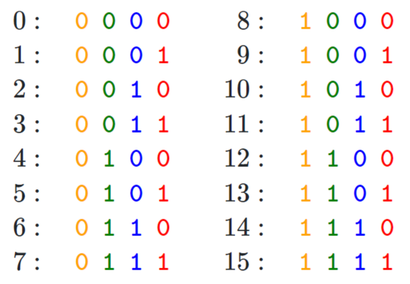
transformer论文中作者通过sin函数和cos函数交替来创建 positional encoding，其计算positional encoding的公式如下
P E ( p o s , 2 i + 1 ) = c o s ( p o s 1000 0 2 i d m o d e l ) PE_{(pos,2i+1)}= cos(\frac{pos}{10000^{\frac{2i}{d_{model}}}})
P E ( p o s , 2 i + 1 ) = c o s ( 1 0 0 0 0 d m o d e l 2 i p o s )
P E ( p o s , 2 i ) = s i n ( p o s 1000 0 2 i d m o d e l ) PE_{(pos,2i)}= sin(\frac{pos}{10000^{\frac{2i}{d_{model}}}})
P E ( p o s , 2 i ) = s i n ( 1 0 0 0 0 d m o d e l 2 i p o s )
其中，pos相当于是每个token在整个序列中的位置，相当于是0, 1, 2, 3…(看序列长度是多大，比如10，比如100)，d m o d e l d_{model} d m o d e l
至于i是embedding向量的位置下标对2求商并取整(可用双斜杠//表示整数除法，即求商并取整)，它的取值范围是[0,1,2,…,d m o d e l 2 \frac{d_{model}}{2} 2 d m o d e l
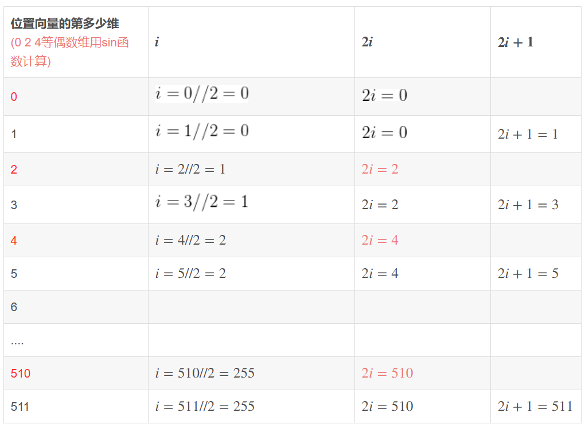
(例如对于第8个token的位置向量编码，位置向量的第7维元素为c o s ( 8 1000 0 6 d m o d e l ) cos(\frac{8}{10000^{\frac{6}{d_{model}}}}) c o s ( 1 0 0 0 0 d m o d e l 6 8 )
当要编码「我 爱 你」的位置向量，假定每个token都具备512维，如果位置下标从0开始时，则根据位置编码的计算公式可得：
当对pos = 0上的单词「我」进行位置编码时，它本身的维度有512维
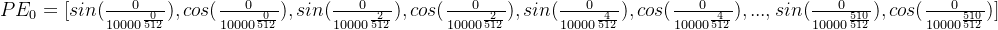
当对pos = 1上的单词「爱」进行位置编码时，它本身的维度有512维
当对pos = 2上的单词「你」进行位置编码时，它本身的维度有512维
最终得到的可视化效果如下图所示
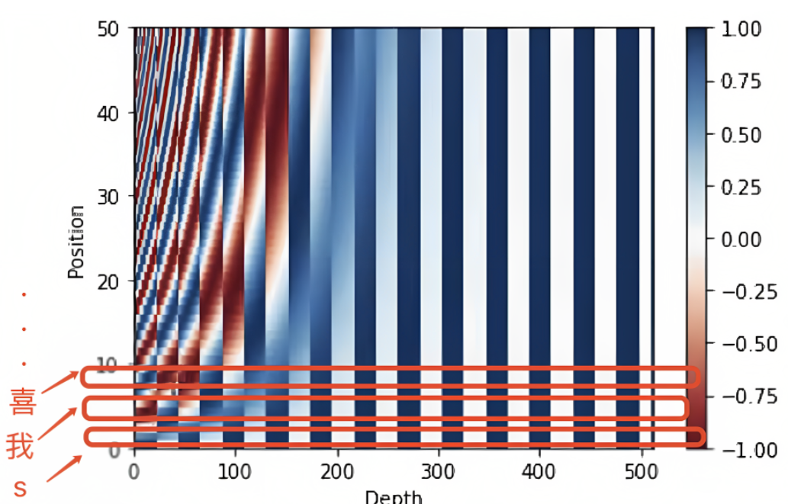
代码实现如下
1 2 3 4 5 6 7 8 9 10 11 12 13 14 15 16 17 18 19 20 21 22 23 24 25 26 “”“位置编码的实现，调用父类nn.Module的构造函数”“” class PositionalEncoding (nn.Module): def __init__ (self, d_model, dropout, max_len=5000 ): super (PositionalEncoding, self ).__init__() self .dropout = nn.Dropout(p=dropout) pe = torch.zeros(max_len, d_model) position = torch.arange(0 , max_len).unsqueeze(1 ) div_term = torch.exp(torch.arange(0 , d_model, 2 ) * -(math.log(10000.0 ) / d_model)) pe[:, 0 ::2 ] = torch.sin(position * div_term) pe[:, 1 ::2 ] = torch.cos(position * div_term) pe = pe.unsqueeze(0 ) self .register_buffer('pe' , pe) def forward (self, x ): x = x + Variable(self .pe[:, :x.size(1 )], requires_grad=False ) return self .dropout(x)
本文发布之后，有同学留言问，上面中的第11行、12行代码
1 div_term = torch.exp(torch.arange(0 , d_model, 2 ) * -(math.log(10000.0 ) / d_model))
为什么先转换为了等价的指数+对数运算，而不是直接幂运算？是效率、精度方面有差异吗？
这里使用指数和对数运算的原因是为了确保数值稳定性和计算效率
一方面，直接使用幂运算可能会导致数值上溢或下溢。当d_model较大时，10000. 0 ( − i / d _ m o d e l ) 10000.0 ^ {(-i / d\_model)} 1 0 0 0 0 . 0 ( − i / d _ m o d e l )
二方面，在许多计算设备和库中，指数和对数运算的实现通常比幂运算更快。这主要是因为指数和对数运算在底层硬件和软件中有特定的优化实现，而幂运算通常需要计算更多的中间值
所以，使用指数和对数运算可以在保持数值稳定性的同时提高计算效率。
既然提到了这行代码，我们干脆就再讲更细致些，上面那行代码对应的公式为
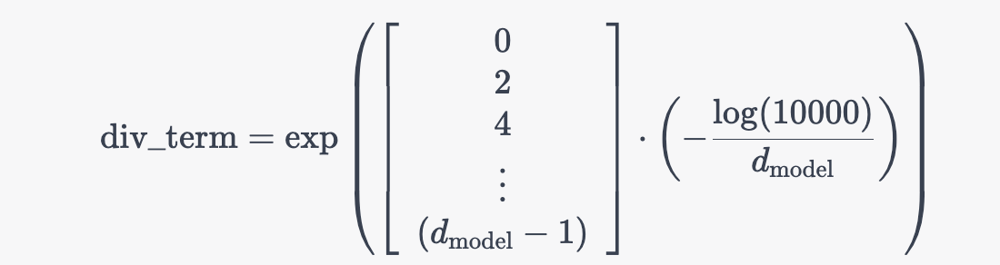
其中的中括号对应的是一个从 0 到 d model − 1 d_{\text{model}} - 1 d model − 1 i i i
且上述公式与这个公式是等价的
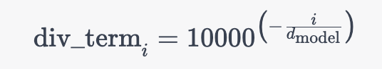
为何，原因在于a x = e ( x ⋅ l n ( a ) ) a^x=e^{(x\cdot ln(a))} a x = e ( x ⋅ l n ( a ) ) 1000 0 − i d m o d e l = e ( − i d m o d e l ⋅ l o g ( 10000 ) ) 10000^{-\frac{i}{d_{model}}}=e^{(-\frac{i}{d_{model}}\cdot log(10000))} 1 0 0 0 0 − d m o d e l i = e ( − d m o d e l i ⋅ l o g ( 1 0 0 0 0 ) )
最终，再通过下面这两行代码完美实现位置编码
1 2 3 pe[:, 0 ::2 ] = torch.sin(position * div_term) pe[:, 1 ::2 ] = torch.cos(position * div_term)
先复习下复数的一些关键概念
我们一般用a + b i a + bi a + b i 复数 ，实数a叫做复数的实部，实数b叫做复数的虚部
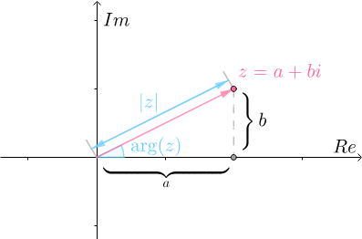
复数的辐角是指复数在复平面上对应的向量和正向实数轴所成的有向角
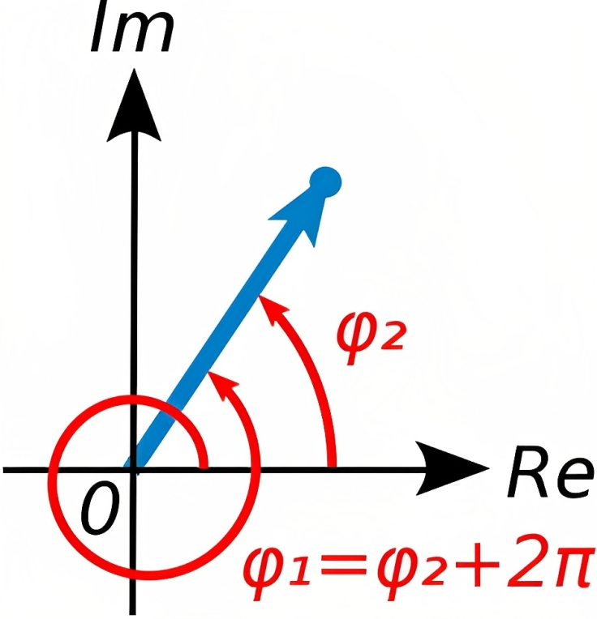
z = a + i b z = a + ib z = a + i b z ∗ = a − i b z^* = a - ib z ∗ = a − i b z ˉ \bar{z} z ˉ z × z ∗ = a 2 + b 2 = ∣ z ∣ 2 z \times z^* = a^2 + b^2 = |z|^2 z × z ∗ = a 2 + b 2 = ∣ z ∣ 2
在我们的日常生活中，经常会遇到各种平移运动，为了描述这些平移运动，数学上定义了加减乘除，然还有一类运动是旋转运动，而加减乘除无法去描述旋转运动，而有了复数之后，便不一样了，此话怎讲？
根据复数的定义：i = − 1 i=\sqrt{-1} i = − 1 i 2 = 1 × i × i = − 1 i^{2}=1 \times i \times i=-1 i 2 = 1 × i × i = − 1 i i i
so，i i i
当x x x e e e i i i
e i x = cos x + i sin x e^{i x}=\cos x+i \sin x
e i x = cos x + i sin x
表达的含义在于该指数函数可以表示为实部为，虚部为s i n x sinx s i n x
该欧拉公式相当于建立了指数函数、三角函数和复数之间的桥梁，但怎么推导出来的呢，其实很简单
由于有
e x = 1 + x + 1 2 ! x 2 + 1 3 ! x 3 + ⋯ e^{x}=1+x+\frac{1}{2 !} x^{2}+\frac{1}{3 !} x^{3}+\cdots
e x = 1 + x + 2 ! 1 x 2 + 3 ! 1 x 3 + ⋯
sin ( x ) = x − 1 3 ! x 3 + 1 5 ! x 5 + ⋯ \sin (x)=x-\frac{1}{3 !} x^{3}+\frac{1}{5 !} x^{5}+\cdots
sin ( x ) = x − 3 ! 1 x 3 + 5 ! 1 x 5 + ⋯
cos ( x ) = 1 − 1 2 ! x 2 + 1 4 ! x 4 + ⋯ \cos (x)=1-\frac{1}{2 !} x^{2}+\frac{1}{4 !} x^{4}+\cdots
cos ( x ) = 1 − 2 ! 1 x 2 + 4 ! 1 x 4 + ⋯
所以，如果x = i θ x = i\theta x = i θ
e i θ = 1 + i θ + ( i θ ) 2 2 ! + ( i θ ) 3 3 ! + ( i θ ) 4 4 ! + ( i θ ) 5 5 ! + ( i θ ) 6 6 ! + ( i θ ) 7 7 ! + ( i θ ) 8 8 ! + ⋯ = 1 + i θ − θ 2 2 ! − i θ 3 3 ! + θ 4 4 ! + i θ 5 5 ! − θ 6 6 ! − i θ 7 7 ! + θ 8 8 ! + ⋯ = ( 1 − θ 2 2 ! + θ 4 4 ! − θ 6 6 ! + θ 8 8 ! − ⋯ ) + i ( θ − θ 3 3 ! + θ 5 5 ! − θ 7 7 ! + ⋯ ) = cos θ + i sin θ \begin{aligned} e^{i \theta} & =1+i \theta+\frac{(i \theta)^{2}}{2 !}+\frac{(i \theta)^{3}}{3 !}+\frac{(i \theta)^{4}}{4 !}+\frac{(i \theta)^{5}}{5 !}+\frac{(i \theta)^{6}}{6 !}+\frac{(i \theta)^{7}}{7 !}+\frac{(i \theta)^{8}}{8 !}+\cdots \\ & =1+i \theta-\frac{\theta^{2}}{2 !}-\frac{i \theta^{3}}{3 !}+\frac{\theta^{4}}{4 !}+\frac{i \theta^{5}}{5 !}-\frac{\theta^{6}}{6 !}-\frac{i \theta^{7}}{7 !}+\frac{\theta^{8}}{8 !}+\cdots \\ & =\left(1-\frac{\theta^{2}}{2 !}+\frac{\theta^{4}}{4 !}-\frac{\theta^{6}}{6 !}+\frac{\theta^{8}}{8 !}-\cdots\right)+i\left(\theta-\frac{\theta^{3}}{3 !}+\frac{\theta^{5}}{5 !}-\frac{\theta^{7}}{7 !}+\cdots\right) \\ & =\cos \theta+i \sin \theta \end{aligned}
e i θ = 1 + i θ + 2 ! ( i θ ) 2 + 3 ! ( i θ ) 3 + 4 ! ( i θ ) 4 + 5 ! ( i θ ) 5 + 6 ! ( i θ ) 6 + 7 ! ( i θ ) 7 + 8 ! ( i θ ) 8 + ⋯ = 1 + i θ − 2 ! θ 2 − 3 ! i θ 3 + 4 ! θ 4 + 5 ! i θ 5 − 6 ! θ 6 − 7 ! i θ 7 + 8 ! θ 8 + ⋯ = ( 1 − 2 ! θ 2 + 4 ! θ 4 − 6 ! θ 6 + 8 ! θ 8 − ⋯ ) + i ( θ − 3 ! θ 3 + 5 ! θ 5 − 7 ! θ 7 + ⋯ ) = cos θ + i sin θ
如何直观的理解这个欧拉公式呢？
其实，可以把e i θ e^{i \theta} e i θ cos θ + i sin θ \cos \theta+i \sin \theta cos θ + i sin θ e i θ = cos θ + i sin θ e^{i \theta}=\cos \theta+i \sin \theta e i θ = cos θ + i sin θ
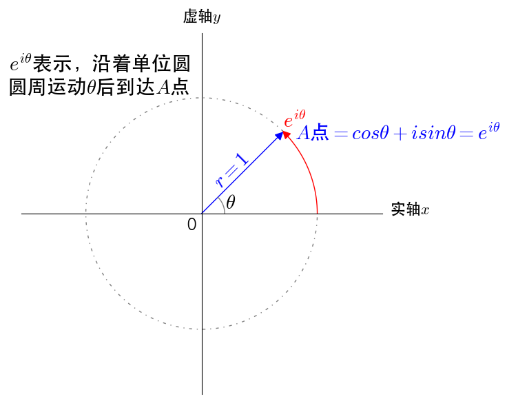
根据欧拉公式e i θ = cos θ + i sin θ e^{i \theta}=\cos \theta+i \sin \theta e i θ = cos θ + i sin θ
sin θ = e i θ − e − i θ 2 i \sin \theta=\frac{e^{i \theta}-e^{-i \theta}}{2 i}
sin θ = 2 i e i θ − e − i θ
cos θ = e i θ + e − i θ 2 \cos \theta=\frac{e^{i \theta}+e^{-i \theta}}{2}
cos θ = 2 e i θ + e − i θ
我们把复数当作向量来看待，复数的实部是x x x y y y
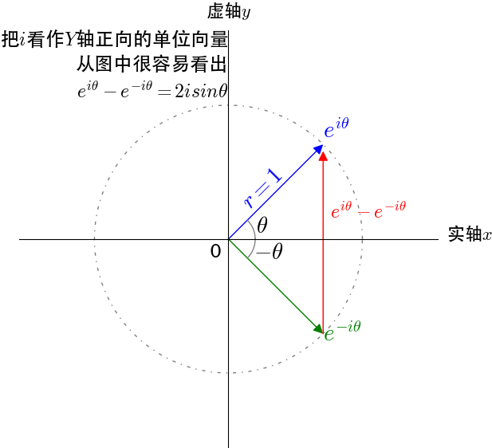
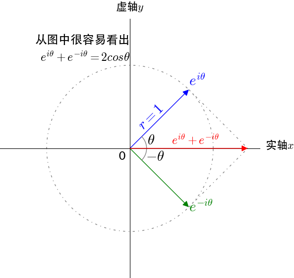
所谓旋转位置编码，其在位置编码上删除了绝对位置嵌入 ，而在网络的每一层增加了苏剑林等人(2021)提出的旋转位置嵌入(RoPE) ，其思想是采用绝对位置编码的形式实现相对位置编码 ，且RoPE主要借助了复数的思想
具体来说，当咱们给self-attention中的q , k , v q,k,v q , k , v
q m = f q ( x m , m ) k n = f k ( x n , n ) v n = f v ( x n , n ) \begin{aligned} \boldsymbol{q}_{m} & =f_{q}\left(\boldsymbol{x}_{m}, m\right) \\ \boldsymbol{k}_{n} & =f_{k}\left(\boldsymbol{x}_{n}, n\right) \\ \boldsymbol{v}_{n} & =f_{v}\left(\boldsymbol{x}_{n}, n\right) \end{aligned}
q m k n v n = f q ( x m , m ) = f k ( x n , n ) = f v ( x n , n )
其中
q m q_{m} q m x m x_{m} x m
k n , v n k_{n},v_{n} k n , v n x n x_{n} x n
接着论文中提出为了能利用上 token 之间的相对位置信息，假定 query 向量 q m q_m q m k n k_n k n g g g g g g x m x_m x m x n x_n x n m − n m - n m − n
< f q ( x m , m ) , f k ( x n , n ) > = g ( x m , x n , m − n ) <f_{q}\left(x_{m}, m\right), f_{k}\left(x_{n}, n\right)>=g\left(x_{m}, x_{n}, m-n\right)
< f q ( x m , m ) , f k ( x n , n ) > = g ( x m , x n , m − n )
这里面其实有很大的一个关键，但大部分资料甚至RoPE原始论文都不会给你特别强调出来，即为何要构造这么一个等式呢？
原因在于左边算是q和k向量的内积，而这恰好是transformer计算自注意力机制的核心一步，右边等式则意味着m与n的相对位置如此一来，该等式便把“q和k的内积”与“它们的相对位置”给串起来了 左边是含有各自绝对位置信息的q向量和k向量，而这个等式就是RoPE追求的目标，物理含义就是通过显式传入绝对位置信息实现与传入相对位置信息对等 的情况
注意，，原Transformer论文嵌入位置信息的方式是将原词向量与位置编码向量相加，而旋转位置编码是通过旋转变换在原本的词向量中嵌入了位置信息。
假定现在词嵌入向量的维度是两维 d = 2 d = 2 d = 2 f f f g g g
f q ( x m , m ) = ( W q x m ) e i m θ f k ( x n , n ) = ( W k x n ) e i n θ g ( x m , x n , m − n ) = Re [ ( W q x m ) ( W k x n ) ∗ e i ( m − n ) θ ] \begin{array}{l} f_{q}\left(\boldsymbol{x}_{m}, m\right)=\left(\boldsymbol{W}_{q} \boldsymbol{x}_{m}\right) e^{i m \theta} \\ f_{k}\left(\boldsymbol{x}_{n}, n\right)=\left(\boldsymbol{W}_{k} \boldsymbol{x}_{n}\right) e^{i n \theta} \\ g\left(\boldsymbol{x}_{m}, \boldsymbol{x}_{n}, m-n\right)=\operatorname{Re}\left[\left(\boldsymbol{W}_{q} \boldsymbol{x}_{m}\right)\left(\boldsymbol{W}_{k} \boldsymbol{x}_{n}\right)^{*} e^{i(m-n) \theta}\right] \end{array}
f q ( x m , m ) = ( W q x m ) e i m θ f k ( x n , n ) = ( W k x n ) e i n θ g ( x m , x n , m − n ) = R e [ ( W q x m ) ( W k x n ) ∗ e i ( m − n ) θ ]
这里面的 Re 表示复数的实部
进一步地， f q f_q f q q m q_{m} q m q m \boldsymbol{q}_{m} q m q m \boldsymbol{q}_{m} q m q m q_{m} q m
f q ( x m , m ) = ( cos m θ − sin m θ ) sin m θ cos m θ ) ( W q ( 1 , 1 ) W q ( 1 , 2 ) W q ( 2 , 1 ) W q ( 2 , 2 ) ) ( x m ( 1 ) x m ( 2 ) ) = ( cos m θ − sin m θ ) sin m θ cos m θ ) ( q m ( 1 ) q m ( 2 ) ) \begin{aligned} f_{q}\left(\boldsymbol{x}_{m}, m\right) & =\left(\begin{array}{cc} \cos m \theta & -\sin m \theta) \\ \sin m \theta & \cos m \theta \end{array}\right)\left(\begin{array}{ll} W_{q}^{(1,1)} & W_{q}^{(1,2)} \\ W_{q}^{(2,1)} & W_{q}^{(2,2)} \end{array}\right)\left(\begin{array}{c} x_{m}^{(1)} \\ x_{m}^{(2)} \end{array}\right) \\ & =\left(\begin{array}{cc} \cos m \theta & -\sin m \theta) \\ \sin m \theta & \cos m \theta \end{array}\right)\left(\begin{array}{c} q_{m}^{(1)} \\ q_{m}^{(2)} \end{array}\right) \end{aligned}
f q ( x m , m ) = ( cos m θ sin m θ − sin m θ ) cos m θ ) ( W q ( 1 , 1 ) W q ( 2 , 1 ) W q ( 1 , 2 ) W q ( 2 , 2 ) ) ( x m ( 1 ) x m ( 2 ) ) = ( cos m θ sin m θ − sin m θ ) cos m θ ) ( q m ( 1 ) q m ( 2 ) )
f k ( x n , n ) = ( cos n θ − sin n θ ) sin n θ cos n θ ) ( W k ( 1 , 1 ) W k ( 1 , 2 ) W k ( 2 , 1 ) W k ( 2 , 2 ) ) ( x n ( 1 ) x n ( 2 ) ) = ( cos n θ − sin n θ ) sin n θ cos n θ ) ( k n ( 1 ) k n ( 2 ) ) \begin{aligned} f_{k}\left(\boldsymbol{x}_{n}, n\right) & =\left(\begin{array}{cc} \cos n \theta & -\sin n \theta) \\ \sin n \theta & \cos n \theta \end{array}\right)\left(\begin{array}{ll} W_{k}^{(1,1)} & W_{k}^{(1,2)} \\ W_{k}^{(2,1)} & W_{k}^{(2,2)} \end{array}\right)\left(\begin{array}{c} x_{n}^{(1)} \\ x_{n}^{(2)} \end{array}\right) \\ & =\left(\begin{array}{cc} \cos n \theta & -\sin n \theta) \\ \sin n \theta & \cos n \theta \end{array}\right)\left(\begin{array}{l} k_{n}^{(1)} \\ k_{n}^{(2)} \end{array}\right) \end{aligned}
f k ( x n , n ) = ( cos n θ sin n θ − sin n θ ) cos n θ ) ( W k ( 1 , 1 ) W k ( 2 , 1 ) W k ( 1 , 2 ) W k ( 2 , 2 ) ) ( x n ( 1 ) x n ( 2 ) ) = ( cos n θ sin n θ − sin n θ ) cos n θ ) ( k n ( 1 ) k n ( 2 ) )
最终g ( x m , x n , m − n ) g\left(\boldsymbol{x}_{m}, \boldsymbol{x}_{n}, m-n\right) g ( x m , x n , m − n ) f q ( x m , m ) ∗ f k ( x n , n ) ) f_{q}\left(\boldsymbol{x}_{m}, m\right)* f_{k}\left(\boldsymbol{x}_{n}, n\right)) f q ( x m , m ) ∗ f k ( x n , n ) )
g ( x m , x n , m − n ) = ( q m ( 1 ) q m ( 2 ) ) ( cos ( ( m − n ) θ ) − sin ( ( m − n ) θ ) sin ( ( m − n ) θ ) cos ( ( m − n ) θ ) ) ( k n ( 1 ) k n ( 2 ) ) g\left(\boldsymbol{x}_{m}, \boldsymbol{x}_{n}, m-n\right)=\left(\begin{array}{ll} \boldsymbol{q}_{m}^{(1)} & \boldsymbol{q}_{m}^{(2)} \end{array}\right)\left(\begin{array}{cc} \cos ((m-n) \theta) & -\sin ((m-n) \theta) \\ \sin ((m-n) \theta) & \cos ((m-n) \theta) \end{array}\right)\left(\begin{array}{c} k_{n}^{(1)} \\ k_{n}^{(2)} \end{array}\right)
g ( x m , x n , m − n ) = ( q m ( 1 ) q m ( 2 ) ) ( cos ( ( m − n ) θ ) sin ( ( m − n ) θ ) − sin ( ( m − n ) θ ) cos ( ( m − n ) θ ) ) ( k n ( 1 ) k n ( 2 ) )
然上述分别关于f q f_q f q f k f_k f k g ( x m , x n , m − n ) g\left(\boldsymbol{x}_{m}, \boldsymbol{x}_{n}, m-n\right) g ( x m , x n , m − n ) 此文 一步一步解释下
首先看第一个式子，对于f q ( x m , m ) = ( W q x m ) e i m θ f_{q}\left(x_{m}, m\right)=\left(W_{q} x_{m}\right) e^{i m \theta} f q ( x m , m ) = ( W q x m ) e i m θ W q x m W_{q} x_{m} W q x m e i m θ e^{i m \theta} e i m θ
对于前者W q x m W_{q} x_{m} W q x m W q W_q W q x m x_m x m q m q_m q m
q m = ( q m ( 1 ) q m ( 2 ) ) = W q x m = ( W q ( 11 ) W q ( 12 ) W q ( 21 ) W q ( 22 ) ) ( x m ( 1 ) x m ( 2 ) ) q_{m}=\left(\begin{array}{c} q_{m}^{(1)} \\ q_{m}^{(2)} \end{array}\right)=W_{q} x_{m}=\left(\begin{array}{ll} W_{q}^{(11)} & W_{q}^{(12)} \\ W_{q}^{(21)} & W_{q}^{(22)} \end{array}\right)\left(\begin{array}{c} x_{m}^{(1)} \\ x_{m}^{(2)} \end{array}\right)
q m = ( q m ( 1 ) q m ( 2 ) ) = W q x m = ( W q ( 1 1 ) W q ( 2 1 ) W q ( 1 2 ) W q ( 2 2 ) ) ( x m ( 1 ) x m ( 2 ) )
对于后者e i m θ e^{i m \theta} e i m θ e i x = cos x + i sin x e^{i x}=\cos x+i \sin x e i x = cos x + i sin x
e i m θ = cos ( m θ ) + i sin ( m θ ) e i n θ = cos ( n θ ) + i sin ( n θ ) e i ( m − n ) θ = cos ( ( m − n ) θ ) + i sin ( ( m − n ) θ ) \begin{array}{c} e^{i m \theta}=\cos (m \theta)+i \sin (m \theta) \\ e^{i n \theta}=\cos (n \theta)+i \sin (n \theta) \\ e^{i(m-n) \theta}=\cos ((m-n) \theta)+i \sin ((m-n) \theta) \end{array}
e i m θ = cos ( m θ ) + i sin ( m θ ) e i n θ = cos ( n θ ) + i sin ( n θ ) e i ( m − n ) θ = cos ( ( m − n ) θ ) + i sin ( ( m − n ) θ )
基于上面第1点结论，可知
f q ( x m , m ) = ( W q x m ) e i m θ = q m e i m θ f_{q}\left(x_{m}, m\right)=\left(W_{q} x_{m}\right) e^{i m \theta}=q_{m} e^{i m \theta}
f q ( x m , m ) = ( W q x m ) e i m θ = q m e i m θ
然后将q m q_m q m
q m = [ q m ( 1 ) , q m ( 2 ) ] = [ q m ( 1 ) + i q m ( 2 ) ] \textcolor{red}{q_{m}=\left[q_{m}^{(1)}, q_{m}^{(2)}\right]=\left[q_{m}^{(1)}+i q_{m}^{(2)}\right]}
q m = [ q m ( 1 ) , q m ( 2 ) ] = [ q m ( 1 ) + i q m ( 2 ) ]
从而有
f q ( x m , m ) = q m e i m θ = [ q m ( 1 ) + i q m ( 2 ) ] e i m θ f_{q}\left(x_{m}, m\right)= q_{m} e^{i m \theta} = \left[q_{m}^{(1)}+i q_{m}^{(2)}\right] e^{i m \theta}
f q ( x m , m ) = q m e i m θ = [ q m ( 1 ) + i q m ( 2 ) ] e i m θ
基于上面第2点结论，可知f q ( x m , m ) f_{q}\left(x_{m}, m\right) f q ( x m , m )
f q ( x m , m ) = q m e i m θ = ( q m ( 1 ) + i q m ( 2 ) ) ∗ ( cos ( m θ ) + i sin ( m θ ) ) f_{q}\left(x_{m}, m\right) = q_{m} e^{i m \theta}=\left(q_{m}^{(1)}+i q_{m}^{(2)}\right) *(\cos (m \theta)+i \sin (m \theta))
f q ( x m , m ) = q m e i m θ = ( q m ( 1 ) + i q m ( 2 ) ) ∗ ( cos ( m θ ) + i sin ( m θ ) )
考虑到以下两个关于复数的背景知识
( a + i b ) ⋅ ( c + i d ) = a c + i b c + i a d + i 2 b d = ( a c − b d ) + i ( b c + a d ) (a+i b) \cdot(c+i d)=a c+i b c+i a d+i^{2} b d=(a c-b d)+i(b c+a d)
( a + i b ) ⋅ ( c + i d ) = a c + i b c + i a d + i 2 b d = ( a c − b d ) + i ( b c + a d )
i 2 = − 1 i^{2}=-1
i 2 = − 1
可得
q m e i m θ = ( q m ( 1 ) + i q m ( 2 ) ) ∗ ( cos ( m θ ) + i sin ( m θ ) ) = ( q m ( 1 ) cos ( m θ ) − q m ( 2 ) sin ( m θ ) ) + i ( q m ( 2 ) cos ( m θ ) + q m ( 1 ) sin ( m θ ) ) \begin{aligned} q_{m} e^{i m \theta} & =\left(q_{m}^{(1)}+i q_{m}^{(2)}\right) *(\cos (m \theta)+i \sin (m \theta)) \\ =\left(q_{m}^{(1)} \cos (m \theta)\right. & \left.-q_{m}^{(2)} \sin (m \theta)\right)+i\left(q_{m}^{(2)} \cos (m \theta)+q_{m}^{(1)} \sin (m \theta)\right) \end{aligned}
q m e i m θ = ( q m ( 1 ) cos ( m θ ) = ( q m ( 1 ) + i q m ( 2 ) ) ∗ ( cos ( m θ ) + i sin ( m θ ) ) − q m ( 2 ) sin ( m θ ) ) + i ( q m ( 2 ) cos ( m θ ) + q m ( 1 ) sin ( m θ ) )
将这个结果表达成实数向量形式，即是
q m e i m θ = [ q m ( 1 ) cos ( m θ ) − q m ( 2 ) sin ( m θ ) , q m ( 2 ) cos ( m θ ) + q m ( 1 ) sin ( m θ ) ] q_{m} e^{i m \theta}=\left[q_{m}^{(1)} \cos (m \theta)-q_{m}^{(2)} \sin (m \theta), q_{m}^{(2)} \cos (m \theta)+q_{m}^{(1)} \sin (m \theta)\right]
q m e i m θ = [ q m ( 1 ) cos ( m θ ) − q m ( 2 ) sin ( m θ ) , q m ( 2 ) cos ( m θ ) + q m ( 1 ) sin ( m θ ) ]
至此，你也就不难发现，这不就是query向量乘以了一个旋转矩阵 么
f q ( x m , m ) = ( W q x m ) e i m θ = q m e i m θ = [ q m ( 1 ) cos ( m θ ) − q m ( 2 ) sin ( m θ ) , q m ( 2 ) cos ( m θ ) + q m ( 1 ) sin ( m θ ) ] = ( cos ( m θ ) − sin ( m θ ) sin ( m θ ) cos ( m θ ) ) ( q m ( 1 ) q m ( 2 ) ) \begin{array}{c} f_{q}\left(x_{m}, m\right)=\left(W_{q} x_{m}\right) e^{i m \theta}=q_{m} e^{i m \theta} \\ =\left[q_{m}^{(1)} \cos (m \theta)-q_{m}^{(2)} \sin (m \theta), q_{m}^{(2)} \cos (m \theta)+q_{m}^{(1)} \sin (m \theta)\right] \\ =\left(\begin{array}{cc} \cos (m \theta) & -\sin (m \theta) \\ \sin (m \theta) & \cos (m \theta) \end{array}\right)\left(\begin{array}{c} q_{m}^{(1)} \\ q_{m}^{(2)} \end{array}\right) \end{array}
f q ( x m , m ) = ( W q x m ) e i m θ = q m e i m θ = [ q m ( 1 ) cos ( m θ ) − q m ( 2 ) sin ( m θ ) , q m ( 2 ) cos ( m θ ) + q m ( 1 ) sin ( m θ ) ] = ( cos ( m θ ) sin ( m θ ) − sin ( m θ ) cos ( m θ ) ) ( q m ( 1 ) q m ( 2 ) )
至于第二个式子，根据上述过程同理，可得key向量k n k_n k n
f k ( x n , n ) = ( W k x n ) e i n θ = k n e i n θ = [ k n ( 1 ) cos ( n θ ) − k n ( 2 ) sin ( n θ ) , k n ( 2 ) cos ( n θ ) + k n ( 1 ) sin ( n θ ) ] = ( cos ( n θ ) − sin ( n θ ) sin ( n θ ) cos ( n θ ) ) ( k n ( 1 ) k n ( 2 ) ) \begin{array}{c} f_{k}\left(x_{n}, n\right)=\left(W_{k} x_{n}\right) e^{i n \theta}=k_{n} e^{i n \theta} \\ =\left[k_{n}^{(1)} \cos (n \theta)-k_{n}^{(2)} \sin (n \theta), k_{n}^{(2)} \cos (n \theta)+k_{n}^{(1)} \sin (n \theta)\right] \\ =\left(\begin{array}{cc} \cos (n \theta) & -\sin (n \theta) \\ \sin (n \theta) & \cos (n \theta) \end{array}\right)\left(\begin{array}{c} k_{n}^{(1)} \\ k_{n}^{(2)} \end{array}\right) \end{array}
f k ( x n , n ) = ( W k x n ) e i n θ = k n e i n θ = [ k n ( 1 ) cos ( n θ ) − k n ( 2 ) sin ( n θ ) , k n ( 2 ) cos ( n θ ) + k n ( 1 ) sin ( n θ ) ] = ( cos ( n θ ) sin ( n θ ) − sin ( n θ ) cos ( n θ ) ) ( k n ( 1 ) k n ( 2 ) )
最后第三个式子，函数g，则可得
g ( x m , x n , m − n ) = Re [ ( W q x m ) ( W k x n ) ∗ e i ( m − n ) θ ] g\left(x_{m}, x_{n}, m-n\right)=\operatorname{Re}\left[\left(W_{q} x_{m}\right)\left(W_{k} x_{n}\right)^{*} e^{i(m-n) \theta}\right]
g ( x m , x n , m − n ) = R e [ ( W q x m ) ( W k x n ) ∗ e i ( m − n ) θ ]
其中，R e [ x ] Re[x] R e [ x ] ( W k x n ) ∗ \left(W_{k} x_{n}\right)^{*} ( W k x n ) ∗ W k x n W_{k} x_{n} W k x n
考虑到
z = a + i b z ∗ = a − i b \begin{array}{c} z=a+i b \\ z^{*}=a-i b \end{array}
z = a + i b z ∗ = a − i b
再结合上面第一个式子中的推导，可得
W q x m = q m = q m ( 1 ) + i q m ( 2 ) W k x n = k n = k n ( 1 ) + i k n ( 2 ) ( W k x n ) ∗ = k n ∗ = k n ( 1 ) − i k n ( 2 ) e i ( m − n ) θ = cos ( ( m − n ) θ ) + i sin ( ( m − n ) θ ) \begin{array}{c} W_{q} x_{m}=q_{m}=q_{m}^{(1)}+i q_{m}^{(2)} \\ W_{k} x_{n}=k_{n}=k_{n}^{(1)}+i k_{n}^{(2)} \\ \left(W_{k} x_{n}\right)^{*}=k_{n}^{*}=k_{n}^{(1)}-i k_{n}^{(2)} \\ e^{i(m-n) \theta}=\cos ((m-n) \theta)+i \sin ((m-n) \theta) \end{array}
W q x m = q m = q m ( 1 ) + i q m ( 2 ) W k x n = k n = k n ( 1 ) + i k n ( 2 ) ( W k x n ) ∗ = k n ∗ = k n ( 1 ) − i k n ( 2 ) e i ( m − n ) θ = cos ( ( m − n ) θ ) + i sin ( ( m − n ) θ )
继续结合上面第一个式子中的推导(比如
( a + i b ) ⋅ ( c + i d ) = a c + i b c + i a d + i 2 b d = ( a c − b d ) + i ( b c + a d ) (a+i b) \cdot(c+i d)=a c+i b c+i a d+i^{2} b d=(a c-b d)+i(b c+a d) ( a + i b ) ⋅ ( c + i d ) = a c + i b c + i a d + i 2 b d = ( a c − b d ) + i ( b c + a d ) i 2 = − 1 i^{2}=-1 i 2 = − 1
可知，我们现在要证明的是存在
g ( x m , x n , m − n ) = Re [ ( W q x m ) ( W k x n ) ∗ e i ( m − n ) θ ] = Re [ ( q m ( 1 ) + i q m ( 2 ) ) ( k n ( 1 ) − i k n ( 2 ) ) ( cos ( ( m − n ) θ ) + i sin ( ( m − n ) θ ) ) ] = Re [ ( ( q m ( 1 ) k n ( 1 ) + q m ( 2 ) k n ( 2 ) ) + i ( q m ( 2 ) k n ( 1 ) − q m ( 1 ) k n ( 2 ) ) ) ( cos ( ( m − n ) θ ) + i sin ( ( m − n ) θ ) ) ] = ( q m ( 1 ) k n ( 1 ) + q m ( 2 ) k n ( 2 ) ) cos ( ( m − n ) θ ) − ( q m ( 2 ) k n ( 1 ) − q m ( 1 ) k n ( 2 ) ) sin ( ( m − n ) θ ) \begin{array}{c} g\left(x_{m}, x_{n}, m-n\right)=\operatorname{Re}\left[\left(W_{q} x_{m}\right)\left(W_{k} x_{n}\right)^{*} e^{i(m-n) \theta}\right] \\ =\operatorname{Re}\left[\left(q_{m}^{(1)}+i q_{m}^{(2)}\right)\left(k_{n}^{(1)}-i k_{n}^{(2)}\right)(\cos ((m-n) \theta)+i \sin ((m-n) \theta))\right] \\ =\operatorname{Re}\left[\left(\left(q_{m}^{(1)} k_{n}^{(1)}+q_{m}^{(2)} k_{n}^{(2)}\right)+i\left(q_{m}^{(2)} k_{n}^{(1)}-q_{m}^{(1)} k_{n}^{(2)}\right)\right)(\cos ((m-n) \theta)+i \sin ((m-n) \theta))\right] \\ =\left(q_{m}^{(1)} k_{n}^{(1)}+q_{m}^{(2)} k_{n}^{(2)}\right) \cos ((m-n) \theta)-\left(q_{m}^{(2)} k_{n}^{(1)}-q_{m}^{(1)} k_{n}^{(2)}\right) \sin ((m-n) \theta) \end{array}
g ( x m , x n , m − n ) = R e [ ( W q x m ) ( W k x n ) ∗ e i ( m − n ) θ ] = R e [ ( q m ( 1 ) + i q m ( 2 ) ) ( k n ( 1 ) − i k n ( 2 ) ) ( cos ( ( m − n ) θ ) + i sin ( ( m − n ) θ ) ) ] = R e [ ( ( q m ( 1 ) k n ( 1 ) + q m ( 2 ) k n ( 2 ) ) + i ( q m ( 2 ) k n ( 1 ) − q m ( 1 ) k n ( 2 ) ) ) ( cos ( ( m − n ) θ ) + i sin ( ( m − n ) θ ) ) ] = ( q m ( 1 ) k n ( 1 ) + q m ( 2 ) k n ( 2 ) ) cos ( ( m − n ) θ ) − ( q m ( 2 ) k n ( 1 ) − q m ( 1 ) k n ( 2 ) ) sin ( ( m − n ) θ )
总之，接下来我们就要证明上述函数 g 的计算公式是成立的
首先，回顾一下attention操作，位置m的query和位置n的key会做一个内积操作
即由
f q ( x m , m ) = [ q m ( 1 ) cos ( m θ ) − q m ( 2 ) sin ( m θ ) , q m ( 2 ) cos ( m θ ) + q m ( 1 ) sin ( m θ ) ] f k ( x n , n ) = [ k n ( 1 ) cos ( n θ ) − k n ( 2 ) sin ( n θ ) , k n ( 2 ) cos ( n θ ) + k n ( 1 ) sin ( n θ ) ] \begin{array}{c} f_{q}\left(x_{m}, m\right)=\left[q_{m}^{(1)} \cos (m \theta)-q_{m}^{(2)} \sin (m \theta), q_{m}^{(2)} \cos (m \theta)+q_{m}^{(1)} \sin (m \theta)\right] \\ f_{k}\left(x_{n}, n\right)=\left[k_{n}^{(1)} \cos (n \theta)-k_{n}^{(2)} \sin (n \theta), k_{n}^{(2)} \cos (n \theta)+k_{n}^{(1)} \sin (n \theta)\right] \end{array}
f q ( x m , m ) = [ q m ( 1 ) cos ( m θ ) − q m ( 2 ) sin ( m θ ) , q m ( 2 ) cos ( m θ ) + q m ( 1 ) sin ( m θ ) ] f k ( x n , n ) = [ k n ( 1 ) cos ( n θ ) − k n ( 2 ) sin ( n θ ) , k n ( 2 ) cos ( n θ ) + k n ( 1 ) sin ( n θ ) ]
可得
< f q ( x m , m ) , f k ( x n , n ) > = ( q m ( 1 ) cos ( m θ ) − q m ( 2 ) sin ( m θ ) ) ( k n ( 1 ) cos ( n θ ) − k n ( 2 ) sin ( n θ ) ) + ( q m ( 2 ) cos ( m θ ) + q m ( 1 ) sin ( m θ ) ) ( k n ( 2 ) cos ( n θ ) + k n ( 1 ) sin ( n θ ) ) = q m ( 1 ) cos ( m θ ) k n ( 1 ) cos ( n θ ) − q m ( 1 ) cos ( m θ ) k n ( 2 ) sin ( n θ ) − q m ( 2 ) sin ( m θ ) k n ( 1 ) cos ( n θ ) + q m ( 2 ) sin ( m θ ) k n ( 2 ) sin ( n θ ) + q m ( 2 ) cos ( m θ ) k n ( 2 ) cos ( n θ ) + q m ( 2 ) cos ( m θ ) k n ( 1 ) sin ( n θ ) + q m ( 1 ) sin ( m θ ) k n ( 2 ) cos ( n θ ) + q m ( 1 ) sin ( m θ ) k n ( 1 ) sin ( n θ ) \begin{array}{c} <f_{q}\left(x_{m}, m\right), f_{k}\left(x_{n}, n\right)> \\ = \left(q_{m}^{(1)} \cos (m \theta)-q_{m}^{(2)} \sin (m \theta)\right)\left(k_{n}^{(1)} \cos (n \theta)-k_{n}^{(2)} \sin (n \theta)\right) \\ +\left(q_{m}^{(2)} \cos (m \theta)+q_{m}^{(1)} \sin (m \theta)\right)\left(k_{n}^{(2)} \cos (n \theta)+k_{n}^{(1)} \sin (n \theta)\right) \\ =q_{m}^{(1)} \cos (m \theta) k_{n}^{(1)} \cos (n \theta)-q_{m}^{(1)} \cos (m \theta) k_{n}^{(2)} \sin (n \theta) \\ -q_{m}^{(2)} \sin (m \theta) k_{n}^{(1)} \cos (n \theta)+q_{m}^{(2)} \sin (m \theta) k_{n}^{(2)} \sin (n \theta) \\ +q_{m}^{(2)} \cos (m \theta) k_{n}^{(2)} \cos (n \theta)+q_{m}^{(2)} \cos (m \theta) k_{n}^{(1)} \sin (n \theta) \\ +q_{m}^{(1)} \sin (m \theta) k_{n}^{(2)} \cos (n \theta)+q_{m}^{(1)} \sin (m \theta) k_{n}^{(1)} \sin (n \theta) \end{array}
< f q ( x m , m ) , f k ( x n , n ) > = ( q m ( 1 ) cos ( m θ ) − q m ( 2 ) sin ( m θ ) ) ( k n ( 1 ) cos ( n θ ) − k n ( 2 ) sin ( n θ ) ) + ( q m ( 2 ) cos ( m θ ) + q m ( 1 ) sin ( m θ ) ) ( k n ( 2 ) cos ( n θ ) + k n ( 1 ) sin ( n θ ) ) = q m ( 1 ) cos ( m θ ) k n ( 1 ) cos ( n θ ) − q m ( 1 ) cos ( m θ ) k n ( 2 ) sin ( n θ ) − q m ( 2 ) sin ( m θ ) k n ( 1 ) cos ( n θ ) + q m ( 2 ) sin ( m θ ) k n ( 2 ) sin ( n θ ) + q m ( 2 ) cos ( m θ ) k n ( 2 ) cos ( n θ ) + q m ( 2 ) cos ( m θ ) k n ( 1 ) sin ( n θ ) + q m ( 1 ) sin ( m θ ) k n ( 2 ) cos ( n θ ) + q m ( 1 ) sin ( m θ ) k n ( 1 ) sin ( n θ )
相当于[A,B]与[C,D]做内积，则相当于A B横着，C D竖着，最终结果为AC BD，最后再把括号里的项全部对应相乘、展开
首先，把上面第二点的式子整理一下，总计8项，为了把q k qk q k
理、第2项 7项合并处理、第3项 6项合并处理、第4项 5项合并处理
其次，考虑到
sin ( a + b ) = sin a cos b + cos a sin b sin ( a − b ) = sin a cos b − cos a sin b cos ( a + b ) = cos a cos b − sin a sin b cos ( a − b ) = cos a cos b + sin a sin b \begin{array}{l} \sin (a+b)=\sin a \cos b+\cos a \sin b \\ \sin (a-b)=\sin a \cos b-\cos a \sin b \\ \cos (a+b)=\cos a \cos b-\sin a \sin b \\ \cos (a-b)=\cos a \cos b+\sin a \sin b \end{array}
sin ( a + b ) = sin a cos b + cos a sin b sin ( a − b ) = sin a cos b − cos a sin b cos ( a + b ) = cos a cos b − sin a sin b cos ( a − b ) = cos a cos b + sin a sin b
最后，再把相关项的特点，两次调整下顺序即可
依据以上三点，从而有
< f q ( x m , m ) , f k ( x n , n ) > = q m ( 1 ) k n ( 1 ) ( cos ( m θ ) cos ( n θ ) + sin ( m θ ) sin ( n θ ) ) + q m ( 1 ) k n ( 2 ) ( − cos ( m θ ) sin ( n θ ) + sin ( m θ ) cos ( n θ ) ) + q m ( 2 ) k n ( 1 ) ( − sin ( m θ ) cos ( n θ ) + cos ( m θ ) sin ( n θ ) ) + q m ( 2 ) k n ( 2 ) ( sin ( m θ ) sin ( n θ ) + cos ( m θ ) cos ( n θ ) ) = q m ( 1 ) k n ( 1 ) cos ( ( m − n ) θ ) + q m ( 1 ) k n ( 2 ) sin ( ( m − n ) θ ) − q m ( 2 ) k n ( 1 ) sin ( ( m − n ) θ ) + q m ( 2 ) k n ( 2 ) cos ( ( m − n ) θ ) = ( q m ( 1 ) k n ( 1 ) + q m ( 2 ) k n ( 2 ) ) cos ( ( m − n ) θ ) + ( q m ( 1 ) k n ( 2 ) − q m ( 2 ) k n ( 1 ) ) sin ( ( m − n ) θ ) = ( q m ( 1 ) k n ( 1 ) + q m ( 2 ) k n ( 2 ) ) cos ( ( m − n ) θ ) − ( q m ( 2 ) k n ( 1 ) − q m ( 1 ) k n ( 2 ) ) sin ( ( m − n ) θ ) = g ( x m , x n , m − n ) \begin{array}{c} <f_{q}\left(x_{m}, m\right), f_{k}\left(x_{n}, n\right)>\\ = q_{m}^{(1)} k_{n}^{(1)}(\cos (m \theta) \cos (n \theta)+\sin (m \theta) \sin (n \theta)) \\ +q_{m}^{(1)} k_{n}^{(2)}(-\cos (m \theta) \sin (n \theta)+\sin (m \theta) \cos (n \theta)) \\ +q_{m}^{(2)} k_{n}^{(1)}(-\sin (m \theta) \cos (n \theta)+\cos (m \theta) \sin (n \theta)) \\ +q_{m}^{(2)} k_{n}^{(2)}(\sin (m \theta) \sin (n \theta)+\cos (m \theta) \cos (n \theta)) \\ =q_{m}^{(1)} k_{n}^{(1)} \cos ((m-n) \theta) \\ +q_{m}^{(1)} k_{n}^{(2)} \sin ((m-n) \theta) \\ -q_{m}^{(2)} k_{n}^{(1)} \sin ((m-n) \theta) \\ +q_{m}^{(2)} k_{n}^{(2)} \cos ((m-n) \theta) \\ =\left(q_{m}^{(1)} k_{n}^{(1)}+q_{m}^{(2)} k_{n}^{(2)}\right) \cos ((m-n) \theta)+\left(q_{m}^{(1)} k_{n}^{(2)}-q_{m}^{(2)} k_{n}^{(1)}\right) \sin ((m-n) \theta) \\ =\left(q_{m}^{(1)} k_{n}^{(1)}+q_{m}^{(2)} k_{n}^{(2)}\right) \cos ((m-n) \theta)-\left(q_{m}^{(2)} k_{n}^{(1)}-q_{m}^{(1)} k_{n}^{(2)}\right) \sin ((m-n) \theta) \\ =g\left(x_{m}, x_{n}, m-n\right) \end{array}
< f q ( x m , m ) , f k ( x n , n ) > = q m ( 1 ) k n ( 1 ) ( cos ( m θ ) cos ( n θ ) + sin ( m θ ) sin ( n θ ) ) + q m ( 1 ) k n ( 2 ) ( − cos ( m θ ) sin ( n θ ) + sin ( m θ ) cos ( n θ ) ) + q m ( 2 ) k n ( 1 ) ( − sin ( m θ ) cos ( n θ ) + cos ( m θ ) sin ( n θ ) ) + q m ( 2 ) k n ( 2 ) ( sin ( m θ ) sin ( n θ ) + cos ( m θ ) cos ( n θ ) ) = q m ( 1 ) k n ( 1 ) cos ( ( m − n ) θ ) + q m ( 1 ) k n ( 2 ) sin ( ( m − n ) θ ) − q m ( 2 ) k n ( 1 ) sin ( ( m − n ) θ ) + q m ( 2 ) k n ( 2 ) cos ( ( m − n ) θ ) = ( q m ( 1 ) k n ( 1 ) + q m ( 2 ) k n ( 2 ) ) cos ( ( m − n ) θ ) + ( q m ( 1 ) k n ( 2 ) − q m ( 2 ) k n ( 1 ) ) sin ( ( m − n ) θ ) = ( q m ( 1 ) k n ( 1 ) + q m ( 2 ) k n ( 2 ) ) cos ( ( m − n ) θ ) − ( q m ( 2 ) k n ( 1 ) − q m ( 1 ) k n ( 2 ) ) sin ( ( m − n ) θ ) = g ( x m , x n , m − n )
如此，也就证明了，位置 m 的 query 和位置 n 的 key 的内积就是函数 g
最后，把上面的式子一、式子二的最终结果都分别用矩阵向量乘的形式来表达就是：
< f q ( x m , m ) , f k ( x n , n ) > = ( ( cos ( m θ ) − sin ( m θ ) sin ( m θ ) cos ( m θ ) ) ( q m ( 1 ) q m ( 2 ) ) ) T ( ( cos ( n θ ) − sin ( n θ ) sin ( n θ ) cos ( n θ ) ) ( k n ( 1 ) k n ( 2 ) ) ) = ( q m ( 1 ) q m ( 2 ) ) ( cos ( m θ ) sin ( m θ ) − sin ( m θ ) cos ( m θ ) ) ( cos ( n θ ) − sin ( n θ ) sin ( n θ ) cos ( n θ ) ) ( k n ( 1 ) k n ( 2 ) ) \begin{array}{c} <f_{q}\left(x_{m}, m\right), f_{k}\left(x_{n}, n\right)> \\ =\left(\left(\begin{array}{cc} \cos (m \theta) & -\sin (m \theta) \\ \sin (m \theta) & \cos (m \theta) \end{array}\right)\left(\begin{array}{c} q_{m}^{(1)} \\ q_{m}^{(2)} \end{array}\right)\right)^{T}\left(\left(\begin{array}{cc} \cos (n \theta) & -\sin (n \theta) \\ \sin (n \theta) & \cos (n \theta) \end{array}\right)\left(\begin{array}{c} k_{n}^{(1)} \\ k_{n}^{(2)} \end{array}\right)\right) \\ =\left(\begin{array}{ll} q_{m}^{(1)} & q_{m}^{(2)} \end{array}\right)\left(\begin{array}{cc} \cos (m \theta) & \sin (m \theta) \\ -\sin (m \theta) & \cos (m \theta) \end{array}\right)\left(\begin{array}{cc} \cos (n \theta) & -\sin (n \theta) \\ \sin (n \theta) & \cos (n \theta) \end{array}\right)\left(\begin{array}{l} k_{n}^{(1)} \\ k_{n}^{(2)} \end{array}\right) \end{array}
< f q ( x m , m ) , f k ( x n , n ) > = ( ( cos ( m θ ) sin ( m θ ) − sin ( m θ ) cos ( m θ ) ) ( q m ( 1 ) q m ( 2 ) ) ) T ( ( cos ( n θ ) sin ( n θ ) − sin ( n θ ) cos ( n θ ) ) ( k n ( 1 ) k n ( 2 ) ) ) = ( q m ( 1 ) q m ( 2 ) ) ( cos ( m θ ) − sin ( m θ ) sin ( m θ ) cos ( m θ ) ) ( cos ( n θ ) sin ( n θ ) − sin ( n θ ) cos ( n θ ) ) ( k n ( 1 ) k n ( 2 ) )
接下来，我们要计算两个旋转矩阵的乘积，即中间部分的这个式子
( cos ( m θ ) sin ( m θ ) − sin ( m θ ) cos ( m θ ) ) ( cos ( n θ ) − sin ( n θ ) sin ( n θ ) cos ( n θ ) ) \left(\begin{array}{cc} \cos (m \theta) & \sin (m \theta) \\ -\sin (m \theta) & \cos (m \theta) \end{array}\right)\left(\begin{array}{cc} \cos (n \theta) & -\sin (n \theta) \\ \sin (n \theta) & \cos (n \theta) \end{array}\right)
( cos ( m θ ) − sin ( m θ ) sin ( m θ ) cos ( m θ ) ) ( cos ( n θ ) sin ( n θ ) − sin ( n θ ) cos ( n θ ) )
展开之后，可得
( cos ( m θ ) cos ( n θ ) + sin ( m θ ) sin ( n θ ) − cos ( m θ ) sin ( n θ ) + sin ( m θ ) cos ( n θ ) − sin ( m θ ) cos ( n θ ) + cos ( m θ ) sin ( n θ ) sin ( m θ ) sin ( n θ ) + cos ( m θ ) cos ( n θ ) ) \left(\begin{array}{cc} \cos (m \theta) \cos (n \theta)+\sin (m \theta) \sin (n \theta) & -\cos (m \theta) \sin (n \theta)+\sin (m \theta) \cos (n \theta) \\ -\sin (m \theta) \cos (n \theta)+\cos (m \theta) \sin (n \theta) & \sin (m \theta) \sin (n \theta)+\cos (m \theta) \cos (n \theta) \end{array}\right)
( cos ( m θ ) cos ( n θ ) + sin ( m θ ) sin ( n θ ) − sin ( m θ ) cos ( n θ ) + cos ( m θ ) sin ( n θ ) − cos ( m θ ) sin ( n θ ) + sin ( m θ ) cos ( n θ ) sin ( m θ ) sin ( n θ ) + cos ( m θ ) cos ( n θ ) )
从而有
< f q ( x m , m ) , f k ( x n , n ) > = ( q m ( 1 ) q m ( 2 ) ) ( cos ( ( m − n ) θ ) − sin ( ( m − n ) θ ) sin ( ( m − n ) θ ) cos ( ( m − n ) θ ) ) ( k n ( 1 ) k n ( 2 ) ) \begin{array}{l} <f_{q}\left(x_{m}, m\right), {f_{k}\left(x_{n}, n\right)>} \\ =\left(\begin{array}{ll} q_{m}^{(1)} & q_{m}^{(2)} \end{array}\right)\left(\begin{array}{cc} \cos ((m-n) \theta) & -\sin ((m-n) \theta) \\ \sin ((m-n) \theta) & \cos ((m-n) \theta) \end{array}\right)\left(\begin{array}{c} k_{n}^{(1)} \\ k_{n}^{(2)} \end{array}\right) \end{array}
< f q ( x m , m ) , f k ( x n , n ) > = ( q m ( 1 ) q m ( 2 ) ) ( cos ( ( m − n ) θ ) sin ( ( m − n ) θ ) − sin ( ( m − n ) θ ) cos ( ( m − n ) θ ) ) ( k n ( 1 ) k n ( 2 ) )
上面都还只是针对词嵌入维度为2的情况，那对于d > = 2 d>=2 d > = 2 ：
f { q , k } ( x m , m ) = R Θ , m d W { q , k } x m f_{\{q, k\}}\left(\boldsymbol{x}_{m}, m\right)=\boldsymbol{R}_{\Theta, m}^{d} \boldsymbol{W}_{\{q, k\}} \boldsymbol{x}_{m}
f { q , k } ( x m , m ) = R Θ , m d W { q , k } x m
内积满足线性叠加性，因此任意偶数维的RoPE，我们都可以表示为二维情形的拼接，即将词嵌入向量元素按照两两一组分组
R Θ , m d = ( cos m θ 0 − sin m θ 0 0 0 ⋯ 0 0 sin m θ 0 cos m θ 0 0 0 ⋯ 0 0 0 0 cos m θ 1 − sin m θ 1 ⋯ 0 0 0 0 sin m θ 1 cos m θ 1 ⋯ 0 0 ⋮ ⋮ ⋮ ⋮ ⋱ ⋮ ⋮ 0 0 0 0 ⋯ cos m θ d / 2 − 1 − sin m θ d / 2 − 1 0 0 0 0 ⋯ sin m θ d / 2 − 1 cos m θ d / 2 − 1 ) ⏟ W m \boldsymbol{R}_{\Theta, m}^{d}=\underbrace{\left(\begin{array}{ccccccc} \cos m \theta_{0} & -\sin m \theta_{0} & 0 & 0 & \cdots & 0 & 0 \\ \sin m \theta_{0} & \cos m \theta_{0} & 0 & 0 & \cdots & 0 & 0 \\ 0 & 0 & \cos m \theta_{1} & -\sin m \theta_{1} & \cdots & 0 & 0 \\ 0 & 0 & \sin m \theta_{1} & \cos m \theta_{1} & \cdots & 0 & 0 \\ \vdots & \vdots & \vdots & \vdots & \ddots & \vdots & \vdots \\ 0 & 0 & 0 & 0 & \cdots & \cos m \theta_{d / 2-1} & -\sin m \theta_{d / 2-1} \\ 0 & 0 & 0 & 0 & \cdots & \sin m \theta_{d / 2-1} & \cos m \theta_{d / 2-1} \end{array}\right)}_{\boldsymbol{W}_{m}}
R Θ , m d = W m ⎝ ⎜ ⎜ ⎜ ⎜ ⎜ ⎜ ⎜ ⎜ ⎜ ⎜ ⎛ cos m θ 0 sin m θ 0 0 0 ⋮ 0 0 − sin m θ 0 cos m θ 0 0 0 ⋮ 0 0 0 0 cos m θ 1 sin m θ 1 ⋮ 0 0 0 0 − sin m θ 1 cos m θ 1 ⋮ 0 0 ⋯ ⋯ ⋯ ⋯ ⋱ ⋯ ⋯ 0 0 0 0 ⋮ cos m θ d / 2 − 1 sin m θ d / 2 − 1 0 0 0 0 ⋮ − sin m θ d / 2 − 1 cos m θ d / 2 − 1 ⎠ ⎟ ⎟ ⎟ ⎟ ⎟ ⎟ ⎟ ⎟ ⎟ ⎟ ⎞
每组应用同样的旋转操作且每组的旋转角度计算方式如下：
Θ = { θ i = 1000 0 − 2 ( i − 1 ) / d , i ∈ [ 1 , 2 , … , d / 2 ] } \Theta=\left\{\theta_{i}=10000^{-2(i-1) / d}, i \in[1,2, \ldots, d / 2]\right\}
Θ = { θ i = 1 0 0 0 0 − 2 ( i − 1 ) / d , i ∈ [ 1 , 2 , … , d / 2 ] }
所以简单来说 RoPE 的 self-attention 操作的流程是
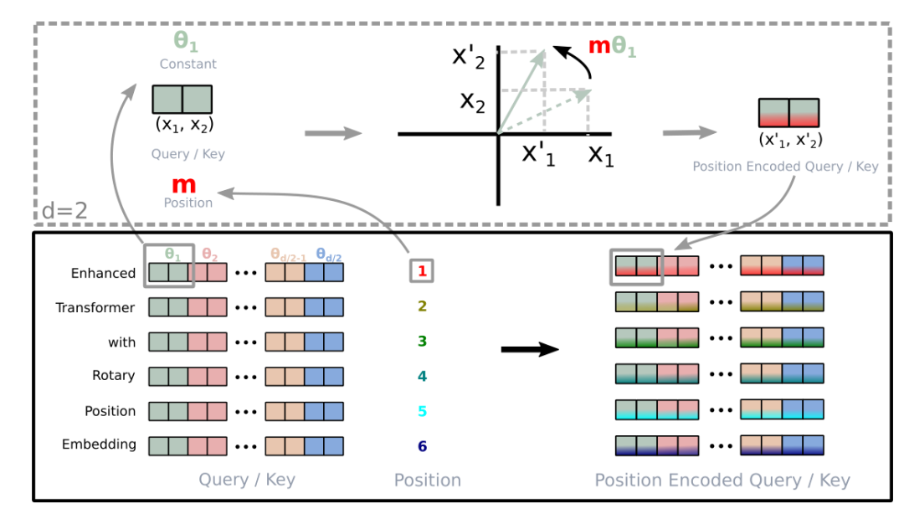
对于 token 序列中的每个词嵌入向量，首先计算其对应的 query 和 key 向量
然后对每个 token 位置都计算对应的旋转位置编码
接着对每个 token 位置的 query 和 key 向量的元素按照 两两一组 应用旋转变换
最后再计算 query 和 key 之间的内积得到 self-attention 的计算结果
与上面第一种形式的推导类似，为了引入复数，首先假设了在加入位置信息之前，原有的编码向量是二维行向量q m q_m q m k n k_n k n m m m n n n q m q_m q m k n k_n k n
q m ~ = f ( q , m ) , k n ~ = f ( k , n ) \tilde {q_m} = f(q, m), \tilde{k_n} = f(k, n)
q m ~ = f ( q , m ) , k n ~ = f ( k , n )
也就是说，我们分别为q q q k k k f ( ⋅ , m ) f(\cdot ,m) f ( ⋅ , m ) f ( ⋅ , n ) f(\cdot ,n) f ( ⋅ , n ) q m ~ \tilde {q_m} q m ~ k n ~ \tilde{k_n} k n ~ m m m n n n
考虑到Attention的核心计算是内积：
A t t e n t i o n ( Q , K , V ) = s o f t m a x ( Q K T d k ) V Attention(Q, K,V) = softmax(\frac {QK^T} {\sqrt{d_k}})V
A t t e n t i o n ( Q , K , V ) = s o f t m a x ( d k Q K T ) V
故我们希望的内积的结果带有相对位置信息，即寻求的这个f ( ∗ ) f(*) f ( ∗ )
⟨ f ( q , m ) , f ( k , n ) ⟩ = g ( q , k , m − n ) \langle f(q, m), f(k, n) \rangle = g(q, k, m-n)
⟨ f ( q , m ) , f ( k , n ) ⟩ = g ( q , k , m − n )
怎么理解？很简单，当m和n表示了绝对位置之后，m与n在句子中的距离即位置差m-n，就可以表示为相对位置了，且对于复数，内积通常定义为一个复数与另一个复数的共轭的乘积
为合理的求出该恒等式的一个尽可能简单的解，可以设定一些初始条件，比如f ( q , 0 ) = q f(q,0)=q f ( q , 0 ) = q f ( k , 0 ) = k f(k,0)=k f ( k , 0 ) = k
在复数中有⟨ q , k ⟩ = Re [ q k ∗ ] \langle\boldsymbol{q}, \boldsymbol{k}\rangle=\operatorname{Re}\left[\boldsymbol{q} \boldsymbol{k}^{*}\right] ⟨ q , k ⟩ = R e [ q k ∗ ] R e [ ] Re[] R e [ ] q q q k k k k ∗ k^* k ∗
考虑两个复数
q = a + b i q = a + bi q = a + b i
k = c + d i k = c + di k = c + d i k k k k ∗ = c − d i k^*= c - di k ∗ = c − d i
一方面，对于等式的右边项而言
q和k*的乘积是 q k ∗ = ( a + b i ) ( c − d i ) = a c − a d i + c b i + b d = ( a c + b d ) + ( c b − a d ) i q k^* = (a + bi)(c - di) = ac - adi + cbi + bd = (ac + bd) + (cb - ad)i q k ∗ = ( a + b i ) ( c − d i ) = a c − a d i + c b i + b d = ( a c + b d ) + ( c b − a d ) i
这个结果的实部是 a c + b d ac + bd a c + b d
二方面，对于等式的左边项而言
其对应于q对应的实数向量[ a , b ] [a, b] [ a , b ] k k k [ c , d ] [c, d] [ c , d ]
[ a , b ] ⋅ [ c , d ] = a c + b d [a, b] \cdot [c, d] = ac + bd [ a , b ] ⋅ [ c , d ] = a c + b d
综合以上两点，可知右边项所表示的“复数q和复数k的共轭k*的乘积”，和左边项做表示的“q、k
所对应向量的乘积”是一样的
总之，我们需要寻找一种f ( ∗ ) f(*) f ( ∗ )
R e [ f ( q , m ) f ∗ ( k , n ) ] = g ( q , k , m − n ) Re[f(q,m)f^{*}(k,n)] = g(q,k,m-n) R e [ f ( q , m ) f ∗ ( k , n ) ] = g ( q , k , m − n )
简单起见，我们假设存在复数g ( q , k , m − n ) g(q,k,m-n) g ( q , k , m − n ) f ( q , m ) f ∗ ( k , n ) = g ( q , k , m − n ) f(q,m)f^*(k,n)=g(q,k,m-n) f ( q , m ) f ∗ ( k , n ) = g ( q , k , m − n )
用复数的指数形式，设
f ( q , m ) = R f ( q , m ) e i Θ f ( q , m ) f ( k , n ) = R f ( k , n ) e i Θ f ( k , n ) g ( q , k , m − n ) = R g ( q , k , m − n ) e i Θ g ( q , k , m − n ) \begin{aligned} \boldsymbol{f}(\boldsymbol{q}, m) & =R_{f}(\boldsymbol{q}, m) e^{\mathrm{i} \Theta_{f}(\boldsymbol{q}, m)} \\ \boldsymbol{f}(\boldsymbol{k}, n) & =R_{f}(\boldsymbol{k}, n) e^{\mathrm{i} \Theta_{f}(\boldsymbol{k}, n)} \\ \boldsymbol{g}(\boldsymbol{q}, \boldsymbol{k}, m-n) & =R_{g}(\boldsymbol{q}, \boldsymbol{k}, m-n) e^{\mathrm{i} \Theta_{g}(\boldsymbol{q}, \boldsymbol{k}, m-n)} \end{aligned}
f ( q , m ) f ( k , n ) g ( q , k , m − n ) = R f ( q , m ) e i Θ f ( q , m ) = R f ( k , n ) e i Θ f ( k , n ) = R g ( q , k , m − n ) e i Θ g ( q , k , m − n )
那么代入方程后就得到两个方程
方程1：R f ( q , m ) R f ( k , n ) = R g ( q , k , m − n ) Rf(q,m)Rf(k,n) = Rg(q,k,m-n) R f ( q , m ) R f ( k , n ) = R g ( q , k , m − n )
方程2：Θ f ( q , m ) − Θ f ( k , n ) = Θ g ( q , k , m − n ) \Theta f(q,m)−\Theta f(k,n) = \Theta g(q,k,m−n) Θ f ( q , m ) − Θ f ( k , n ) = Θ g ( q , k , m − n )
→ \rightarrow → m = n m=n m = n
R f ( q , m ) R f ( k , m ) = R g ( q , k , 0 ) = R f ( q , 0 ) R f ( k , 0 ) = ∥ q ∥ ∥ k ∥ R_{f}(\boldsymbol{q}, m) R_{f}(\boldsymbol{k}, m)=R_{g}(\boldsymbol{q}, \boldsymbol{k}, 0)=R_{f}(\boldsymbol{q}, 0) R_{f}(\boldsymbol{k}, 0)=\|\boldsymbol{q}\|\|\boldsymbol{k}\|
R f ( q , m ) R f ( k , m ) = R g ( q , k , 0 ) = R f ( q , 0 ) R f ( k , 0 ) = ∥ q ∥ ∥ k ∥
最后一个等号源于初始条件f ( q , 0 ) = q f(q,0) = q f ( q , 0 ) = q f ( k , 0 ) = k f(k,0) = k f ( k , 0 ) = k
R f ( q , m ) = ∥ q ∥ Rf(q,m) = \left \| q \right \| R f ( q , m ) = ∥ q ∥ R f ( k , m ) = ∥ k ∥ Rf(k,m)= \left \| k \right \| R f ( k , m ) = ∥ k ∥ m m m
→ \rightarrow → m = n m=n m = n
Θ f ( q , m ) − Θ f ( k , m ) = Θ g ( q , k , 0 ) = Θ f ( q , 0 ) − Θ f ( k , 0 ) = Θ ( q ) − Θ ( k ) \Theta f(q,m)−\Theta f(k,m) = \Theta g(q,k,0) = \Theta f(q,0)−\Theta f(k,0) = \Theta (q)−\Theta (k)
Θ f ( q , m ) − Θ f ( k , m ) = Θ g ( q , k , 0 ) = Θ f ( q , 0 ) − Θ f ( k , 0 ) = Θ ( q ) − Θ ( k )
这里的Θ ( q ) \Theta(q) Θ ( q ) Θ ( k ) \Theta(k) Θ ( k )
根据上式Θ f ( q , m ) − Θ f ( k , m ) = Θ ( q ) − Θ ( k ) \Theta f(q,m)−\Theta f(k,m) = \Theta (q)−\Theta (k) Θ f ( q , m ) − Θ f ( k , m ) = Θ ( q ) − Θ ( k ) Θ f ( q , m ) − Θ ( q ) = Θ f ( k , m ) − Θ ( k ) \Theta f(q,m)−\Theta (q)=\Theta f(k,m)−\Theta (k) Θ f ( q , m ) − Θ ( q ) = Θ f ( k , m ) − Θ ( k )
，所以Θ f ( q , m ) − Θ ( q ) \Theta f(q,m)−\Theta (q) Θ f ( q , m ) − Θ ( q ) φ ( m ) φ(m) φ ( m )
Θ f ( q , m ) = Θ ( q ) + φ ( m ) \Theta f(q,m)=\Theta (q)+φ(m) Θ f ( q , m ) = Θ ( q ) + φ ( m )
接着令n=m−1代入Θf(q,m)−Θf(k,n) = Θg(q,k,m−n) ，可以得到 Θf(q,m)−Θf(k,m-1) =
Θg(q,k,1)
然后将 Θf(q,m) 和 Θf(k,m-1) 的等式代入Θf(q,m)=Θ(q)+φ(m)，我们可以得到 Θ(q) + φ(m) -
(Θ(k) + φ(m-1)) = Θg(q,k,1)，整理一下就得到
φ ( m ) − φ ( m − 1 ) = Θ g ( q , k , 1 ) + Θ ( k ) − Θ ( q ) \varphi(m)-\varphi(m-1)=\Theta g(q, k, 1)+\Theta(k)-\Theta(q)
φ ( m ) − φ ( m − 1 ) = Θ g ( q , k , 1 ) + Θ ( k ) − Θ ( q )
即{φ(m)}是等差数列，设右端为θ，那么就解得φ(m)=mθ
综上，我们得到二维情况下用复数表示的RoPE：
f ( q , m ) = R f ( q , m ) e i Θ f ( q , m ) = ∥ q ∥ e i ( Θ ( q ) + m θ ) = q e i m θ \boldsymbol{f}(\boldsymbol{q}, m)=R_{f}(\boldsymbol{q}, m) e^{\mathrm{i} \Theta f(\boldsymbol{q}, m)}=\|q\| e^{\mathrm{i}(\Theta(\boldsymbol{q})+m \theta)}=\boldsymbol{q} e^{\mathrm{i} m \theta}
f ( q , m ) = R f ( q , m ) e i Θ f ( q , m ) = ∥ q ∥ e i ( Θ ( q ) + m θ ) = q e i m θ
所以说，寻求的变换就是q m e i m θ q_me^{im\theta} q m e i m θ q m q_m q m e i m θ e^{im\theta} e i m θ k n k_n k n e i n θ e^{in\theta} e i n θ
做了这样一个变换之后，根据复数的特性，有：⟨ q m , k n ⟩ = R e [ q m k n ∗ ] \langle q_m, k_n \rangle = Re[q_mk^*_n] ⟨ q m , k n ⟩ = R e [ q m k n ∗ ]
做复数，那么它们的内积，等于一个复数乘以另一个复数的共轭，得到的结果再取实部，代入上面的
变换，也就有：
⟨ q m e i m θ , k n e i n θ ⟩ = R e [ ( q m e i m θ ) ( k n e i n θ ) ∗ ] = R e [ q m k n ∗ e i ( m − n ) θ ] \langle q_me^{im\theta}, k_ne^{in\theta} \rangle = Re[(q_me^{im\theta}) (k_ne^{in\theta})^*] =Re[q_mk_n^*e^{i(m-n)\theta}]
⟨ q m e i m θ , k n e i n θ ⟩ = R e [ ( q m e i m θ ) ( k n e i n θ ) ∗ ] = R e [ q m k n ∗ e i ( m − n ) θ ]
这样一来，内积的结果就只依赖于( m − n ) (m-n) ( m − n )
换言之，经过这样一番操作，通过给Embedding添加绝对位置信息，可以使得两个token的编码，
经过内积变换（self-attn)之后，得到结果是受它们位置的差值，即相对位置影响的
于是，对于任意的位置为m的二维向量[ x , y ] [x, y] [ x , y ] e i m θ e^{im\theta} e i m θ
e i m θ = cos m θ + i sin m θ e^{im\theta}=\cos{m\theta}+i\sin{m\theta}
e i m θ = cos m θ + i sin m θ
从而上述的相乘变换也就变成了(过程中注意：i 2 = − 1 i^2=-1 i 2 = − 1
( x + i y ) e i m θ = ( x + i y ) ( cos m θ + i sin m θ ) = x cos m θ + i x sin m θ + i y cos m θ − y sin m θ = ( x cos m θ − y sin m θ ) + i ( x sin m θ + y cos m θ ) (x+iy)e^{im\theta} \\= (x+ i y) (\cos{m\theta}+i\sin{m\theta}) \\= x\cos{m\theta} + ix\sin{m\theta} + iy\cos{m\theta} - y\sin{m\theta} \\ = (x\cos{m\theta}-y\sin{m\theta})+i(x\sin{m\theta}+y\cos{m\theta})
( x + i y ) e i m θ = ( x + i y ) ( cos m θ + i sin m θ ) = x cos m θ + i x sin m θ + i y cos m θ − y sin m θ = ( x cos m θ − y sin m θ ) + i ( x sin m θ + y cos m θ )
把上述式子写成矩阵形式：
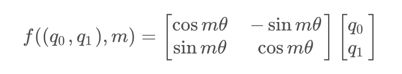
而这个变换的几何意义，就是在二维坐标系下，对向量进行了旋转，因而这种位置编码方法，被称为旋转位置编码
根据刚才的结论，结合内积的线性叠加性，可以将结论推广到高维的情形。可以理解为，每两个维度一组，进行了上述的“旋转”操作，然后再拼接在一起：
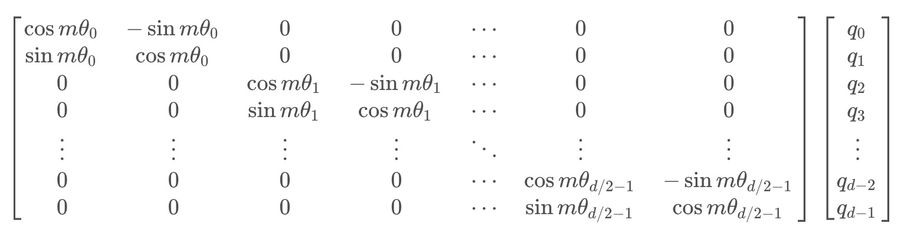
由于矩阵的稀疏性，会造成计算上的浪费，所以在计算时采用逐位相乘再相加的方式进行：
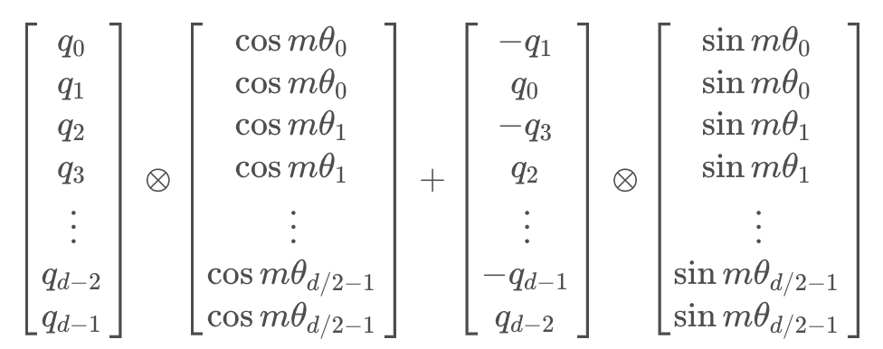
其中⊗ \otimes ⊗
原理理解了，接下来可以代码实现旋转位置编码，考虑到LLaMA本身的实现不是特别好理解，所以我们先通过一份非LLaMA实现的版本，最后再看下LLaMA实现的版本
对于，非LLaMA版的实现，其核心就是实现下面这三个函数 (再次强调，本份关于RoPE的非LLaMA版的实现与上面和之后的代码并非一体的，仅为方便理解RoPE的实现)
sinusoidal\_position\_embedding：这个函数用来生成正弦形状的位置编码。这种编码用来在序列中的token中添加关于相对或绝对位置的信息
1 2 3 4 5 6 7 8 9 10 11 12 13 14 15 16 17 18 19 20 21 22 23 24 25 def sinusoidal_position_embedding (batch_size, nums_head, max_len, output_dim, device ): position = torch.arange(0 , max_len, dtype=torch.float ).unsqueeze(-1 ) ids = torch.arange(0 , output_dim // 2 , dtype=torch.float ) theta = torch.pow (10000 , -2 * ids / output_dim) embeddings = position * theta embeddings = torch.stack([torch.sin(embeddings), torch.cos(embeddings)], dim=-1 ) embeddings = embeddings.repeat((batch_size, nums_head, *([1 ] * len (embeddings.shape)))) embeddings = torch.reshape(embeddings, (batch_size, nums_head, max_len, output_dim)) embeddings = embeddings.to(device) return embeddings
一般的文章可能解释道这个程度基本就over了，但为了让初学者一目了然计，我还是再通过一个完整的示例，来一步步说明上述各个步骤都是怎么逐一结算的，整个过程和之前此文里介绍过的transformer的位置编码本质上是一回事…
为方便和transformer的位置编码做对比，故这里也假定output_dim = 512
首先，我们有 ids 张量，当 output_dim 为 512 时，则
i = 0 / / 2 = 0 i = 0 // 2 = 0 i = 0 / / 2 = 0 2 i = 0 2i = 0 2 i = 0
i = 1 / / 2 = 0 i = 1 //2 =0 i = 1 / / 2 = 0 2 i = 0 , 2 i + 1 = 1 2i = 0,2i+1 = 1 2 i = 0 , 2 i + 1 = 1
i = 2 / / 2 = 1 i = 2 //2 =1 i = 2 / / 2 = 1 2 i = 2 2i = 2 2 i = 2
i = 3 / / 2 = 1 i = 3//2 =1 i = 3 / / 2 = 1 2 i = 2 , 2 i + 1 = 3 2i = 2,2i+1 = 3 2 i = 2 , 2 i + 1 = 3
i = 4 / / 2 = 2 i = 4//2 =2 i = 4 / / 2 = 2 2 i = 4 2i = 4 2 i = 4
i = 5 / / 2 = 2 i = 5 //2 =2 i = 5 / / 2 = 2 2 i = 4 , 2 i + 1 = 5 2i = 4, 2i + 1 =5 2 i = 4 , 2 i + 1 = 5
…
i = 510 / / 2 = 255 i = 510 // 2 = 255 i = 5 1 0 / / 2 = 2 5 5 2 i = 510 2i = 510 2 i = 5 1 0
i = 511 / / 2 = 255 i = 511 // 2 = 255 i = 5 1 1 / / 2 = 2 5 5 2 i = 510 , 2 i + 1 = 511 2i = 510,2i + 1 = 511 2 i = 5 1 0 , 2 i + 1 = 5 1 1
ids = [0,0, 1,1, 2,2, …, 254,254, 255,255]
然后我们有一个基数为10000的指数运算，使用了公式 torch.pow(10000, -2 * ids / output_dim)
[ 1 1000 0 0 512 , 1 1000 0 0 512 , 1 1000 0 2 512 , 1 1000 0 2 512 , 1 1000 0 4 512 , 1 1000 0 4 512 , . . . , 1 1000 0 510 512 , 1 1000 0 510 512 ] [\frac{1}{10000^{\frac{0}{512}}},\frac{1}{10000^{\frac{0}{512}}}, \frac{1}{10000^{\frac{2}{512}}},\frac{1}{10000^{\frac{2}{512}}}, \frac{1}{10000^{\frac{4}{512}}}, \frac{1}{10000^{\frac{4}{512}}},..., \frac{1}{10000^{\frac{510}{512}}},\frac{1}{10000^{\frac{510}{512}}}]
[ 1 0 0 0 0 5 1 2 0 1 , 1 0 0 0 0 5 1 2 0 1 , 1 0 0 0 0 5 1 2 2 1 , 1 0 0 0 0 5 1 2 2 1 , 1 0 0 0 0 5 1 2 4 1 , 1 0 0 0 0 5 1 2 4 1 , . . . , 1 0 0 0 0 5 1 2 5 1 0 1 , 1 0 0 0 0 5 1 2 5 1 0 1 ]
执行 embeddings = position * theta 这行代码，它会将 position 的每个元素与 theta 的相应元素相乘，前三个元素为
[ 0 1000 0 0 512 , 0 1000 0 0 512 , 0 1000 0 2 512 , 0 1000 0 2 512 , 0 1000 0 4 512 , 0 1000 0 4 512 , . . . , 0 1000 0 510 512 , 0 1000 0 510 512 ] [\frac{0}{10000^{\frac{0}{512}}},\frac{0}{10000^{\frac{0}{512}}}, \frac{0}{10000^{\frac{2}{512}}},\frac{0}{10000^{\frac{2}{512}}}, \frac{0}{10000^{\frac{4}{512}}}, \frac{0}{10000^{\frac{4}{512}}},..., \frac{0}{10000^{\frac{510}{512}}},\frac{0}{10000^{\frac{510}{512}}}] [ 1 0 0 0 0 5 1 2 0 0 , 1 0 0 0 0 5 1 2 0 0 , 1 0 0 0 0 5 1 2 2 0 , 1 0 0 0 0 5 1 2 2 0 , 1 0 0 0 0 5 1 2 4 0 , 1 0 0 0 0 5 1 2 4 0 , . . . , 1 0 0 0 0 5 1 2 5 1 0 0 , 1 0 0 0 0 5 1 2 5 1 0 0 ]
[ 1 1000 0 0 512 , 1 1000 0 0 512 , 1 1000 0 2 512 , 1 1000 0 2 512 , 1 1000 0 4 512 , 1 1000 0 4 512 , . . . , 1 1000 0 510 512 , 1 1000 0 510 512 ] [\frac{1}{10000^{\frac{0}{512}}},\frac{1}{10000^{\frac{0}{512}}}, \frac{1}{10000^{\frac{2}{512}}},\frac{1}{10000^{\frac{2}{512}}}, \frac{1}{10000^{\frac{4}{512}}}, \frac{1}{10000^{\frac{4}{512}}},..., \frac{1}{10000^{\frac{510}{512}}},\frac{1}{10000^{\frac{510}{512}}}] [ 1 0 0 0 0 5 1 2 0 1 , 1 0 0 0 0 5 1 2 0 1 , 1 0 0 0 0 5 1 2 2 1 , 1 0 0 0 0 5 1 2 2 1 , 1 0 0 0 0 5 1 2 4 1 , 1 0 0 0 0 5 1 2 4 1 , . . . , 1 0 0 0 0 5 1 2 5 1 0 1 , 1 0 0 0 0 5 1 2 5 1 0 1 ]
[ 2 1000 0 0 512 , 2 1000 0 0 512 , 2 1000 0 2 512 , 2 1000 0 2 512 , 2 1000 0 4 512 , 2 1000 0 4 512 , . . . , 2 1000 0 510 512 , 2 1000 0 510 512 ] [\frac{2}{10000^{\frac{0}{512}}},\frac{2}{10000^{\frac{0}{512}}}, \frac{2}{10000^{\frac{2}{512}}},\frac{2}{10000^{\frac{2}{512}}}, \frac{2}{10000^{\frac{4}{512}}}, \frac{2}{10000^{\frac{4}{512}}},..., \frac{2}{10000^{\frac{510}{512}}},\frac{2}{10000^{\frac{510}{512}}}] [ 1 0 0 0 0 5 1 2 0 2 , 1 0 0 0 0 5 1 2 0 2 , 1 0 0 0 0 5 1 2 2 2 , 1 0 0 0 0 5 1 2 2 2 , 1 0 0 0 0 5 1 2 4 2 , 1 0 0 0 0 5 1 2 4 2 , . . . , 1 0 0 0 0 5 1 2 5 1 0 2 , 1 0 0 0 0 5 1 2 5 1 0 2 ]
接下来我们将对 embeddings 的每个元素应用 torch.sin 和 torch.cos 函数
对于 torch.sin(embeddings)，我们将取 embeddings 中的每个元素的正弦值：
[ s i n ( 0 1000 0 0 512 ) , s i n ( 0 1000 0 2 512 ) , s i n ( 0 1000 0 4 512 ) , . . . , s i n ( 0 1000 0 510 512 ) ] [sin(\frac{0}{10000^{\frac{0}{512}}}), sin(\frac{0}{10000^{\frac{2}{512}}}), sin(\frac{0}{10000^{\frac{4}{512}}}),..., sin(\frac{0}{10000^{\frac{510}{512}}})] [ s i n ( 1 0 0 0 0 5 1 2 0 0 ) , s i n ( 1 0 0 0 0 5 1 2 2 0 ) , s i n ( 1 0 0 0 0 5 1 2 4 0 ) , . . . , s i n ( 1 0 0 0 0 5 1 2 5 1 0 0 ) ]
[ s i n ( 1 1000 0 0 512 ) , s i n ( 1 1000 0 2 512 ) , s i n ( 1 1000 0 4 512 ) , . . . , s i n ( 1 1000 0 510 512 ) ] [sin(\frac{1}{10000^{\frac{0}{512}}}), sin(\frac{1}{10000^{\frac{2}{512}}}), sin(\frac{1}{10000^{\frac{4}{512}}}),..., sin(\frac{1}{10000^{\frac{510}{512}}})] [ s i n ( 1 0 0 0 0 5 1 2 0 1 ) , s i n ( 1 0 0 0 0 5 1 2 2 1 ) , s i n ( 1 0 0 0 0 5 1 2 4 1 ) , . . . , s i n ( 1 0 0 0 0 5 1 2 5 1 0 1 ) ]
[ s i n ( 2 1000 0 0 512 ) , s i n ( 2 1000 0 2 512 ) , s i n ( 2 1000 0 4 512 ) , . . . , s i n ( 2 1000 0 510 512 ) ] [sin(\frac{2}{10000^{\frac{0}{512}}}), sin(\frac{2}{10000^{\frac{2}{512}}}), sin(\frac{2}{10000^{\frac{4}{512}}}),..., sin(\frac{2}{10000^{\frac{510}{512}}})] [ s i n ( 1 0 0 0 0 5 1 2 0 2 ) , s i n ( 1 0 0 0 0 5 1 2 2 2 ) , s i n ( 1 0 0 0 0 5 1 2 4 2 ) , . . . , s i n ( 1 0 0 0 0 5 1 2 5 1 0 2 ) ]
对于 torch.cos(embeddings)，我们将取 embeddings 中的每个元素的余弦值：
[ c o s ( 0 1000 0 0 512 ) , c o s ( 0 1000 0 2 512 ) , c o s ( 0 1000 0 4 512 ) , . . . , , c o s ( 0 1000 0 510 512 ) ] [cos(\frac{0}{10000^{\frac{0}{512}}}),cos(\frac{0}{10000^{\frac{2}{512}}}), cos(\frac{0}{10000^{\frac{4}{512}}}),..., ,cos(\frac{0}{10000^{\frac{510}{512}}})] [ c o s ( 1 0 0 0 0 5 1 2 0 0 ) , c o s ( 1 0 0 0 0 5 1 2 2 0 ) , c o s ( 1 0 0 0 0 5 1 2 4 0 ) , . . . , , c o s ( 1 0 0 0 0 5 1 2 5 1 0 0 ) ]
[ c o s ( 1 1000 0 0 512 ) , c o s ( 1 1000 0 2 512 ) , c o s ( 1 1000 0 4 512 ) , . . . , , c o s ( 1 1000 0 510 512 ) ] [cos(\frac{1}{10000^{\frac{0}{512}}}),cos(\frac{1}{10000^{\frac{2}{512}}}), cos(\frac{1}{10000^{\frac{4}{512}}}),..., ,cos(\frac{1}{10000^{\frac{510}{512}}})] [ c o s ( 1 0 0 0 0 5 1 2 0 1 ) , c o s ( 1 0 0 0 0 5 1 2 2 1 ) , c o s ( 1 0 0 0 0 5 1 2 4 1 ) , . . . , , c o s ( 1 0 0 0 0 5 1 2 5 1 0 1 ) ]
[ c o s ( 2 1000 0 0 512 ) , c o s ( 2 1000 0 2 512 ) , c o s ( 2 1000 0 4 512 ) , . . . , , c o s ( 2 1000 0 510 512 ) ] [cos(\frac{2}{10000^{\frac{0}{512}}}),cos(\frac{2}{10000^{\frac{2}{512}}}), cos(\frac{2}{10000^{\frac{4}{512}}}),..., ,cos(\frac{2}{10000^{\frac{510}{512}}})] [ c o s ( 1 0 0 0 0 5 1 2 0 2 ) , c o s ( 1 0 0 0 0 5 1 2 2 2 ) , c o s ( 1 0 0 0 0 5 1 2 4 2 ) , . . . , , c o s ( 1 0 0 0 0 5 1 2 5 1 0 2 ) ]
最后，torch.stack([torch.sin(embeddings), torch.cos(embeddings)], dim=-1) 将这两个新的张量沿着一个新的维度堆叠起来，并且reshape之后得到的embeddings如下
P E 0 = [ s i n ( 0 1000 0 0 512 ) , c o s ( 0 1000 0 0 512 ) , s i n ( 0 1000 0 2 512 ) , c o s ( 0 1000 0 2 512 ) , s i n ( 0 1000 0 4 512 ) , c o s ( 0 1000 0 4 512 ) , . . . , s i n ( 0 1000 0 510 512 ) , c o s ( 0 1000 0 510 512 ) ] PE_0 = [sin(\frac{0}{10000^{\frac{0}{512}}}),cos(\frac{0}{10000^{\frac{0}{512}}}), sin(\frac{0}{10000^{\frac{2}{512}}}),cos(\frac{0}{10000^{\frac{2}{512}}}), sin(\frac{0}{10000^{\frac{4}{512}}}), cos(\frac{0}{10000^{\frac{4}{512}}}),..., sin(\frac{0}{10000^{\frac{510}{512}}}),cos(\frac{0}{10000^{\frac{510}{512}}})] P E 0 = [ s i n ( 1 0 0 0 0 5 1 2 0 0 ) , c o s ( 1 0 0 0 0 5 1 2 0 0 ) , s i n ( 1 0 0 0 0 5 1 2 2 0 ) , c o s ( 1 0 0 0 0 5 1 2 2 0 ) , s i n ( 1 0 0 0 0 5 1 2 4 0 ) , c o s ( 1 0 0 0 0 5 1 2 4 0 ) , . . . , s i n ( 1 0 0 0 0 5 1 2 5 1 0 0 ) , c o s ( 1 0 0 0 0 5 1 2 5 1 0 0 ) ]
P E 1 = [ s i n ( 1 1000 0 0 512 ) , c o s ( 1 1000 0 0 512 ) , s i n ( 1 1000 0 2 512 ) , c o s ( 1 1000 0 2 512 ) , s i n ( 1 1000 0 4 512 ) , c o s ( 1 1000 0 4 512 ) , . . . , s i n ( 1 1000 0 510 512 ) , c o s ( 1 1000 0 510 512 ) ] PE_1 = [sin(\frac{1}{10000^{\frac{0}{512}}}),cos(\frac{1}{10000^{\frac{0}{512}}}), sin(\frac{1}{10000^{\frac{2}{512}}}),cos(\frac{1}{10000^{\frac{2}{512}}}), sin(\frac{1}{10000^{\frac{4}{512}}}), cos(\frac{1}{10000^{\frac{4}{512}}}),..., sin(\frac{1}{10000^{\frac{510}{512}}}),cos(\frac{1}{10000^{\frac{510}{512}}})] P E 1 = [ s i n ( 1 0 0 0 0 5 1 2 0 1 ) , c o s ( 1 0 0 0 0 5 1 2 0 1 ) , s i n ( 1 0 0 0 0 5 1 2 2 1 ) , c o s ( 1 0 0 0 0 5 1 2 2 1 ) , s i n ( 1 0 0 0 0 5 1 2 4 1 ) , c o s ( 1 0 0 0 0 5 1 2 4 1 ) , . . . , s i n ( 1 0 0 0 0 5 1 2 5 1 0 1 ) , c o s ( 1 0 0 0 0 5 1 2 5 1 0 1 ) ]
P E 2 = [ s i n ( 2 1000 0 0 512 ) , c o s ( 2 1000 0 0 512 ) , s i n ( 2 1000 0 2 512 ) , c o s ( 2 1000 0 2 512 ) , s i n ( 2 1000 0 4 512 ) , c o s ( 2 1000 0 4 512 ) , . . . , s i n ( 2 1000 0 510 512 ) , c o s ( 2 1000 0 510 512 ) ] PE_2 = [sin(\frac{2}{10000^{\frac{0}{512}}}),cos(\frac{2}{10000^{\frac{0}{512}}}), sin(\frac{2}{10000^{\frac{2}{512}}}),cos(\frac{2}{10000^{\frac{2}{512}}}), sin(\frac{2}{10000^{\frac{4}{512}}}), cos(\frac{2}{10000^{\frac{4}{512}}}),..., sin(\frac{2}{10000^{\frac{510}{512}}}),cos(\frac{2}{10000^{\frac{510}{512}}})] P E 2 = [ s i n ( 1 0 0 0 0 5 1 2 0 2 ) , c o s ( 1 0 0 0 0 5 1 2 0 2 ) , s i n ( 1 0 0 0 0 5 1 2 2 2 ) , c o s ( 1 0 0 0 0 5 1 2 2 2 ) , s i n ( 1 0 0 0 0 5 1 2 4 2 ) , c o s ( 1 0 0 0 0 5 1 2 4 2 ) , . . . , s i n ( 1 0 0 0 0 5 1 2 5 1 0 2 ) , c o s ( 1 0 0 0 0 5 1 2 5 1 0 2 ) ]
reshape之前的embeddings如下：
P E 0 = [ s i n ( 0 1000 0 0 512 ) , s i n ( 0 1000 0 2 512 ) , s i n ( 0 1000 0 4 512 ) , . . . , s i n ( 0 1000 0 510 512 ) , c o s ( 0 1000 0 0 512 ) , c o s ( 0 1000 0 2 512 ) , c o s ( 0 1000 0 4 512 ) , . . . , c o s ( 0 1000 0 510 512 ) ] \textcolor{red}{PE_0 = [sin(\frac{0}{10000^{\frac{0}{512}}}), sin(\frac{0}{10000^{\frac{2}{512}}}), sin(\frac{0}{10000^{\frac{4}{512}}}),..., sin(\frac{0}{10000^{\frac{510}{512}}}),cos(\frac{0}{10000^{\frac{0}{512}}}),cos(\frac{0}{10000^{\frac{2}{512}}}),cos(\frac{0}{10000^{\frac{4}{512}}}),...,cos(\frac{0}{10000^{\frac{510}{512}}})]} P E 0 = [ s i n ( 1 0 0 0 0 5 1 2 0 0 ) , s i n ( 1 0 0 0 0 5 1 2 2 0 ) , s i n ( 1 0 0 0 0 5 1 2 4 0 ) , . . . , s i n ( 1 0 0 0 0 5 1 2 5 1 0 0 ) , c o s ( 1 0 0 0 0 5 1 2 0 0 ) , c o s ( 1 0 0 0 0 5 1 2 2 0 ) , c o s ( 1 0 0 0 0 5 1 2 4 0 ) , . . . , c o s ( 1 0 0 0 0 5 1 2 5 1 0 0 ) ]
P E 1 = [ s i n ( 1 1000 0 0 512 ) , s i n ( 1 1000 0 2 512 ) , s i n ( 1 1000 0 4 512 ) , . . . , s i n ( 1 1000 0 510 512 ) , c o s ( 1 1000 0 0 512 ) , c o s ( 1 1000 0 2 512 ) , c o s ( 1 1000 0 4 512 ) , . . . , c o s ( 1 1000 0 510 512 ) ] \textcolor{red}{PE_1 = [sin(\frac{1}{10000^{\frac{0}{512}}}), sin(\frac{1}{10000^{\frac{2}{512}}}), sin(\frac{1}{10000^{\frac{4}{512}}}),..., sin(\frac{1}{10000^{\frac{510}{512}}}),cos(\frac{1}{10000^{\frac{0}{512}}}),cos(\frac{1}{10000^{\frac{2}{512}}}),cos(\frac{1}{10000^{\frac{4}{512}}}),...,cos(\frac{1}{10000^{\frac{510}{512}}})]} P E 1 = [ s i n ( 1 0 0 0 0 5 1 2 0 1 ) , s i n ( 1 0 0 0 0 5 1 2 2 1 ) , s i n ( 1 0 0 0 0 5 1 2 4 1 ) , . . . , s i n ( 1 0 0 0 0 5 1 2 5 1 0 1 ) , c o s ( 1 0 0 0 0 5 1 2 0 1 ) , c o s ( 1 0 0 0 0 5 1 2 2 1 ) , c o s ( 1 0 0 0 0 5 1 2 4 1 ) , . . . , c o s ( 1 0 0 0 0 5 1 2 5 1 0 1 ) ]
P E 2 = [ s i n ( 2 1000 0 0 512 ) , s i n ( 2 1000 0 2 512 ) , s i n ( 2 1000 0 4 512 ) , . . . , s i n ( 2 1000 0 510 512 ) , c o s ( 2 1000 0 0 512 ) , c o s ( 2 1000 0 2 512 ) , c o s ( 2 1000 0 4 512 ) , . . . , c o s ( 2 1000 0 510 512 ) ] \textcolor{red}{PE_2 = [sin(\frac{2}{10000^{\frac{0}{512}}}), sin(\frac{2}{10000^{\frac{2}{512}}}), sin(\frac{2}{10000^{\frac{4}{512}}}),..., sin(\frac{2}{10000^{\frac{510}{512}}}),cos(\frac{2}{10000^{\frac{0}{512}}}),cos(\frac{2}{10000^{\frac{2}{512}}}),cos(\frac{2}{10000^{\frac{4}{512}}}),...,cos(\frac{2}{10000^{\frac{510}{512}}})]} P E 2 = [ s i n ( 1 0 0 0 0 5 1 2 0 2 ) , s i n ( 1 0 0 0 0 5 1 2 2 2 ) , s i n ( 1 0 0 0 0 5 1 2 4 2 ) , . . . , s i n ( 1 0 0 0 0 5 1 2 5 1 0 2 ) , c o s ( 1 0 0 0 0 5 1 2 0 2 ) , c o s ( 1 0 0 0 0 5 1 2 2 2 ) , c o s ( 1 0 0 0 0 5 1 2 4 2 ) , . . . , c o s ( 1 0 0 0 0 5 1 2 5 1 0 2 ) ]
最终，得到如下结果
[ [ [ [ s i n ( 0 1000 0 0 512 ) , c o s ( 0 1000 0 0 512 ) , s i n ( 0 1000 0 2 512 ) , c o s ( 0 1000 0 2 512 ) , . . . , c o s ( 0 1000 0 510 512 ) ] , [ s i n ( 1 1000 0 0 512 ) , c o s ( 1 1000 0 0 512 ) , s i n ( 1 1000 0 2 512 ) , c o s ( 1 1000 0 2 512 ) , . . . , c o s ( 1 1000 0 510 512 ) ] , [ s i n ( 2 1000 0 0 512 ) , c o s ( 2 1000 0 0 512 ) , s i n ( 2 1000 0 2 512 ) , c o s ( 2 1000 0 2 512 ) , . . . , c o s ( 2 1000 0 510 512 ) ] ] ] ] [
[
[
[sin(\frac{0}{10000^{\frac{0}{512}}}), cos(\frac{0}{10000^{\frac{0}{512}}}), sin(\frac{0}{10000^{\frac{2}{512}}}), cos(\frac{0}{10000^{\frac{2}{512}}}), ..., cos(\frac{0}{10000^{\frac{510}{512}}})],\\
[sin(\frac{1}{10000^{\frac{0}{512}}}), cos(\frac{1}{10000^{\frac{0}{512}}}), sin(\frac{1}{10000^{\frac{2}{512}}}), cos(\frac{1}{10000^{\frac{2}{512}}}), ..., cos(\frac{1}{10000^{\frac{510}{512}}})],\\
[sin(\frac{2}{10000^{\frac{0}{512}}}), cos(\frac{2}{10000^{\frac{0}{512}}}), sin(\frac{2}{10000^{\frac{2}{512}}}), cos(\frac{2}{10000^{\frac{2}{512}}}), ..., cos(\frac{2}{10000^{\frac{510}{512}}})]
]
]
]
[ [ [ [ s i n ( 1 0 0 0 0 5 1 2 0 0 ) , c o s ( 1 0 0 0 0 5 1 2 0 0 ) , s i n ( 1 0 0 0 0 5 1 2 2 0 ) , c o s ( 1 0 0 0 0 5 1 2 2 0 ) , . . . , c o s ( 1 0 0 0 0 5 1 2 5 1 0 0 ) ] , [ s i n ( 1 0 0 0 0 5 1 2 0 1 ) , c o s ( 1 0 0 0 0 5 1 2 0 1 ) , s i n ( 1 0 0 0 0 5 1 2 2 1 ) , c o s ( 1 0 0 0 0 5 1 2 2 1 ) , . . . , c o s ( 1 0 0 0 0 5 1 2 5 1 0 1 ) ] , [ s i n ( 1 0 0 0 0 5 1 2 0 2 ) , c o s ( 1 0 0 0 0 5 1 2 0 2 ) , s i n ( 1 0 0 0 0 5 1 2 2 2 ) , c o s ( 1 0 0 0 0 5 1 2 2 2 ) , . . . , c o s ( 1 0 0 0 0 5 1 2 5 1 0 2 ) ] ] ] ]
RoPE：这个函数将相对位置编码（RoPE）应用到注意力机制中的查询和键上。这样，模型就可以根据相对位置关注不同的位置
1 2 3 4 5 6 7 8 9 10 11 12 13 14 15 16 17 18 19 20 21 22 23 24 25 26 27 28 29 30 31 32 33 34 35 import torchimport torch.nn as nnimport torch.nn.functional as Fimport mathdef RoPE (q, k ): batch_size = q.shape[0 ] nums_head = q.shape[1 ] max_len = q.shape[2 ] output_dim = q.shape[-1 ] pos_emb = sinusoidal_position_embedding(batch_size, nums_head, max_len, output_dim, q.device) cos_pos = pos_emb[..., 1 ::2 ].repeat_interleave(2 , dim=-1 ) sin_pos = pos_emb[..., ::2 ].repeat_interleave(2 , dim=-1 ) q2 = torch.stack([-q[..., 1 ::2 ], q[..., ::2 ]], dim=-1 ) q2 = q2.reshape(q.shape) q = q * cos_pos + q2 * sin_pos k2 = torch.stack([-k[..., 1 ::2 ], k[..., ::2 ]], dim=-1 ) k2 = k2.reshape(k.shape) k = k * cos_pos + k2 * sin_pos return q, k
老规矩，为一目了然起见，还是一步一步通过一个示例来加深理解
sinusoidal_position_embedding函数生成位置嵌入。在output_dim=512的情况下，每个位置的嵌入会有512个维度，但为了简单起见，我们只考虑前8个维度，前4个维度为sin编码，后4个维度为cos编码。所以，我们可能得到类似以下的位置嵌入
1 2 3 4 pos_emb = torch.tensor([[[[0.0000 , 0.8415 , 0.9093 , 0.1411 , 1.0000 , 0.5403 , -0.4161 , -0.9900 ], [0.8415 , 0.5403 , 0.1411 , -0.7568 , 0.5403 , -0.8415 , -0.9900 , -0.6536 ], [0.9093 , -0.4161 , -0.8415 , -0.9589 , -0.4161 , -0.9093 , -0.6536 , 0.2836 ]]]])
然后，我们提取出所有的sin位置编码和cos位置编码，并在最后一个维度上每个位置编码进行复制
1 2 sin_pos = pos_emb[..., ::2 ].repeat_interleave(2 , dim=-1 ) cos_pos = pos_emb[..., 1 ::2 ].repeat_interleave(2 , dim=-1 )
更新query向量
我们首先构建一个新的q2向量，这个向量是由原来向量的负的cos部分和sin部分交替拼接而成的
我们用cos_pos对q进行元素级乘法，用sin_pos对q2进行元素级乘法，并将两者相加得到新的query向量
1 2 3 4 5 6 q2 = torch.stack([-q[..., 1 ::2 ], q[..., ::2 ]], dim=-1 ).flatten(start_dim=-2 ) q = q * cos_pos + q2 * sin_pos
公式表示如下
更新key向量
1 2 k2 = torch.stack([-k[..., 1 ::2 ], k[..., ::2 ]], dim=-1 ).flatten(start_dim=-2 )
attention：这是注意力机制的主要功能
首先，如果use_RoPE被设置为True，它会应用RoPE，通过取查询和键的点积（并进行缩放）
然后，进行softmax操作来计算注意力分数，以得到概率，输出是值的加权和，权重是计算出的概率
最后，旋转后的q和k计算点积注意力后，自然就具备了相对位置信息
1 2 3 4 5 6 7 8 9 10 11 12 13 14 15 16 17 18 19 20 21 22 23 24 25 26 27 28 29 30 31 32 33 34 35 36 37 38 39 40 41 42 43 44 45 def attention (q, k, v, mask=None , dropout=None , use_RoPE=True ): if use_RoPE: q, k = RoPE(q, k) d_k = k.size()[-1 ] att_logits = torch.matmul(q, k.transpose(-2 , -1 )) att_logits /= math.sqrt(d_k) if mask is not None : att_scores = att_logits.masked_fill(mask == 0 , -1e-9 ) att_scores = F.softmax(att_logits, dim=-1 ) if dropout is not None : att_scores = dropout(att_scores) return torch.matmul(att_scores, v), att_scores if __name__ == '__main__' : q = torch.randn((8 , 12 , 10 , 32 )) k = torch.randn((8 , 12 , 10 , 32 )) v = torch.randn((8 , 12 , 10 , 32 )) res, att_scores = attention(q, k, v, mask=None , dropout=None , use_RoPE=True ) print (res.shape, att_scores.shape)
接下来，我们再来看下LLaMA里是怎么实现这个旋转位置编码的，具体而言，LLaMA 的model.py 文件里面实现了旋转位置编码(为方便大家理解，我给相关代码 加了下注释)precompute\_freqs\_cisreshape\_for\_broadcastapply\_rotary\_emb
1 2 3 4 5 6 7 def precompute_freqs_cis (dim: int , end: int , theta: float = 10000.0 ): freqs = 1.0 / (theta ** (torch.arange(0 , dim, 2 )[: (dim // 2 )].float () / dim)) t = torch.arange(end, device=freqs.device) freqs = torch.outer(t, freqs).float () freqs_cis = torch.polar(torch.ones_like(freqs), freqs) return freqs_cis
1 2 3 4 5 6 7 def reshape_for_broadcast (freqs_cis: torch.Tensor, x: torch.Tensor ): ndim = x.ndim assert 0 <= 1 < ndim assert freqs_cis.shape == (x.shape[1 ], x.shape[-1 ]) shape = [d if i == 1 or i == ndim - 1 else 1 for i, d in enumerate (x.shape)] return freqs_cis.view(*shape)
1 2 3 4 5 6 7 8 9 10 11 12 def apply_rotary_emb ( xq: torch.Tensor, xk: torch.Tensor, freqs_cis: torch.Tensor, Tuple [torch.Tensor, torch.Tensor]: xq_ = torch.view_as_complex(xq.float ().reshape(*xq.shape[:-1 ], -1 , 2 )) xk_ = torch.view_as_complex(xk.float ().reshape(*xk.shape[:-1 ], -1 , 2 )) freqs_cis = reshape_for_broadcast(freqs_cis, xq_) xq_out = torch.view_as_real(xq_ * freqs_cis).flatten(3 ) xk_out = torch.view_as_real(xk_ * freqs_cis).flatten(3 ) return xq_out.type_as(xq), xk_out.type_as(xk)
之后，在注意力机制的前向传播函数中调用上面实现的第三个函数 apply_rotary_emb，赋上位置信息
1 2 xq, xk = apply_rotary_emb(xq, xk, freqs_cis=freqs_cis)
模型名称 隐藏层维度 层数 注意力头数 词表大小 训练数据（tokens） 位置编码 最大长度 Baichuan-7B 4,096 32 32 64,000 1.2 万亿 RoPE 4,096 Baichuan-13B 5,120 40 40 64,000 1.4 万亿 ALiBi 4,096 Baichuan 2-7B 4096 32 32 125,696 2.6万亿 RoPE 4096 Baichuan 2-13B 5120 40 40 125,696 2.6万亿 ALiBi 4096
注意看上表的位置编码那一列，baichuan 7B无论第一代还是第二代，位置编码均用的RoPE，而baichuan 13B则无论是第一代还是第二代，均用的ALiBi
下面便详细介绍下该ALiBi
ALiBi全称是Attention with Linear Biases，通过论文《Train Short, Test Long: Attention with Linear Biases Enables Input Length Extrapolation 》提出，其不像标准transformer那样，在embedding层添加位置编码，而是在softmax的结果后添加一个静态的不可学习的偏置项(说白了，就是数值固定)
具体而言，如下图所示
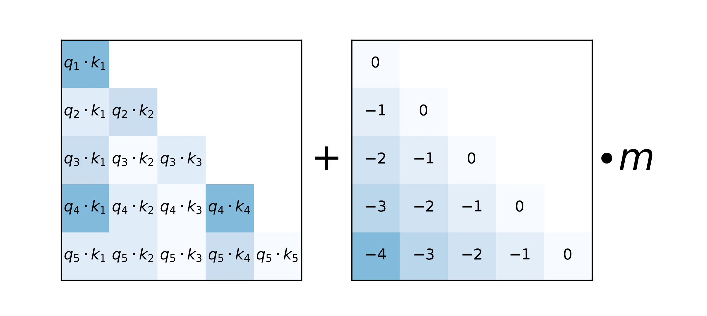
当计算每个头的注意力分数时，线性偏差注意力方法ALiBi会向每个注意力分数(q i ⋅ k j q_i\cdot k_j q i ⋅ k j
左边是自注意力得分，关于q和k的内积→ \rightarrow → → \rightarrow → k的索引 ”1」 - 「q的索引2」，得到1-2 = -1，就对应到了中间矩阵的取值为-1了
那m具体怎么取值呢，按论文中的说法是
当8个heads的时候，m的取值为：
1 2 1 , 1 2 2 , … , 1 2 8 \frac{1}{2^{1}}, \frac{1}{2^{2}}, \ldots, \frac{1}{2^{8}} 2 1 1 , 2 2 1 , … , 2 8 1 1 , 2 , . . . , i 1, 2, ..., i 1 , 2 , . . . , i
如果是16个heads，则m的取值为：
1 2 0.5 , 1 2 1 , 1 2 1.5 , … , 1 2 8 \frac{1}{2^{0.5}}, \frac{1}{2^{1}}, \frac{1}{2^{1.5}}, \ldots, \frac{1}{2^{8}} 2 0 . 5 1 , 2 1 1 , 2 1 . 5 1 , … , 2 8 1
相当于追加了一半的1/sqrt(2)到原来的8个head的每个m的取值
扩展到一般情况就是：对于n个head的话，m的取值就是2 − 8 n 2^{\frac{-8}{n}} 2 n − 8
2 − 8 1 , 2 − 8 2 , 2 − 8 3 , … , 2 − 8 n 2^{\frac{-8}{1}}, 2^{\frac{-8}{2}}, 2^{\frac{-8}{3}}, \ldots, 2^{\frac{-8}{n}} 2 1 − 8 , 2 2 − 8 , 2 3 − 8 , … , 2 n − 8
最终整体的公式便是
softmax ( q i K ⊤ + m ⋅ [ − ( i − 1 ) , … , − 2 , − 1 , 0 ] ) \operatorname{softmax}\left(\mathbf{q}_{i} \mathbf{K}^{\top}+m \cdot[-(i-1), \ldots,-2,-1,0]\right) s o f t m a x ( q i K ⊤ + m ⋅ [ − ( i − 1 ) , … , − 2 , − 1 , 0 ] )
对于第i个query来说，他们之间的相对距离就是：k的索引 - q的索引
具体而言，k的索引 遍历1 , 2 , . . . , i 1, 2, ..., i 1 , 2 , . . . , i i i i
23年9月底[Submitted on 27 Sep 2023 (v1), last revised 14 Nov 2023 (this version, v3) ]，GenAI, Meta正式发布LLaMA 2 Long(这是其论文《Effective Long-Context Scaling of Foundation Models 》 )，与LLaMA 2相比，LLaMA 2 Long的变化主要体现在以下两点
一是训练参数上，采用了高达4000亿token 的数据源(We build our models by continually pretraining from LLAMA 2 checkpoints with additional 400 billion tokens formed as long training sequences )
二是架构上，与LLaMA 2保持不变，但对位置编码进行了一个非常小的必要修改，以此完成高达3.2万token的上下文窗口支持
在LLaMA 2中，它的位置编码采用的是旋转编码RoPE方法，其通过旋转矩阵来实现位置编码的外推
本质上来说，RoPE就是将表示单词、数字等信息的token embeddings映射到3D图表上，给出它们相对于其他token的位置——即使在旋转时也如此
这就能够使模型产生准确且有效的响应，并且比其他方法需要的信息更少，因此占用的计算存储也更小
然，Meta的研究人员通过对70亿规模的LLaMA 2进行实验，确定了LLaMA 2中的RoPE方法的一个局限性 ，即，阻止注意力模块聚集远处token的信息
为此，Meta想出了一个非常简单的破解办法，即
减少每个维度的旋转角度
具体而言就是将超参数“基频(base frequency)b”从10000增加到500000
这个问题不要小瞧，值得好好细究下，llama long原论文提到，对于这个基频参数的修改，除了llama long之外，社区Reddit和code llama也同时运用了，即：“We propose a simple modification to the default RoPE encoding to reduce the decaying effect – increasing the “base frequency b ” of ROPE from 10*,* 000 to 500*,* 000, which essentially reduces the rotation angles of each dimension. The idea is also concurrently suggested in the Reddit r/LocalLLaMa community and Rozière et al. (2023).”
此外，在附录中，Meta还通过可视化为螺旋图这一非常有趣的方式，将RoPE ABF与RoPE PI的差异进行了理论分析
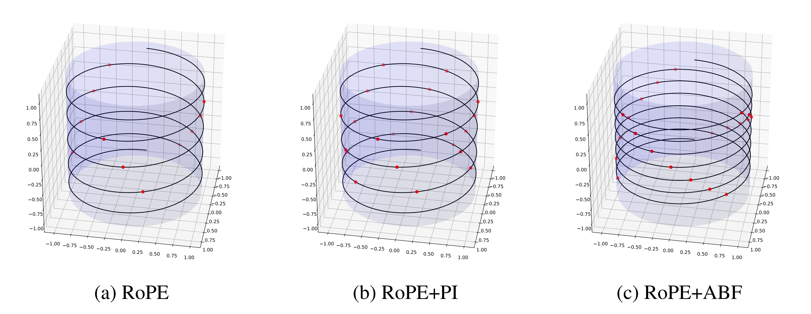
上图b旨在说明位置插值对映射向量相对位置的影响，与上图a相比，连续点之间的距离被大幅缩小
上图c说明了调整基频对结果的影响(The impact of Adjusted Base Frequency is illustrated on Figure 8c)consecutive points remained almost the same as on Figure 8a)
总之，与RoPE PI相比，RoPE ABF的优势主要体现在 它能以更大的粒度分配嵌入向量(the embedded vectors)，从而使模型更容易区分位置
此外，他们还观察到，嵌入向量之间的相对距离既对RoPE PI的关键参数有线性依赖性，也对RoPE ABF的关键参数也有对数依赖性。
这也就是为什么可以很容易地对基频这一超参数“下手”
这一改动立刻奏效，缩小了RoPE对远端token的衰减效应，并且在扩展LLAMA的上下文长度上优于一项类似的名为“位置插值”的方法RoPE PI(如下图所示，RoPE表示基线方法，RoPE ABF为Meta此次发明的新方法，xPos是另一种应用了该方法的旋转编码变体 )
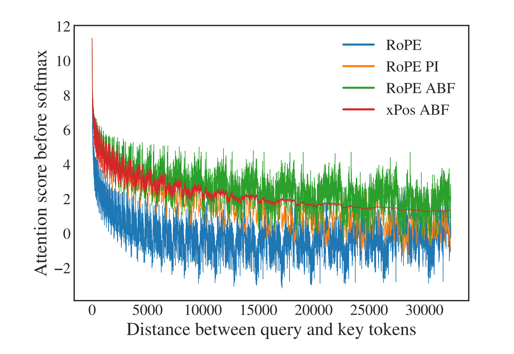
然，一个问题是，通过上面这个可视化结果，Meta观察到RoPE在长程区域出现了较大的“振荡”，这对于语言建模来说可能不是个好消息
不过，通过报告几种方法在长序列困惑度和FIRST-SENTENCE-RETRIEVAL两个任务上的表现来看，问题不大
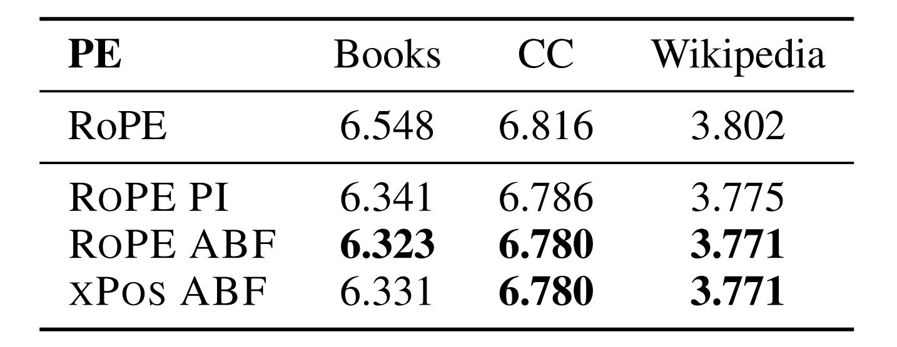
而且，尤其在后者任务上，他们提出的RoPE ABF是唯一一个可以始终保持性能的变体
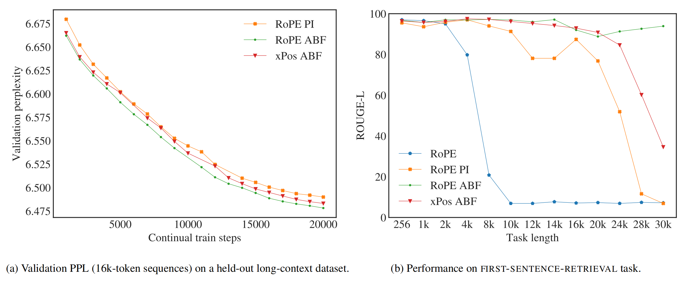
最终，LLaMA 2 Long凭借着这一改动，达成了3.2万的上下文token，并通过长下文连续预训练的共同作用，获得了开头所示的好成绩：
除了全面超越LLaMA 2、在特定任务上超越Claude 2和ChatGPT，Meta也给出了它和一些开源长下文模型的对比。结果也相当不赖，如下图所示

.png)